思维挑战交互版 | 点击"查看解析"按钮查看答案 | 可打印下载
枚举法（又称穷举法），起源于原始的计数方法（即数数）。解题时，按某种顺序把所有满足条件的情况逐一列举出来的方法，称为枚举法。在使用枚举法解决问题时，要做到：不重复、不遗漏。
六（1）班小文有10元、20元和50元的纸币各6张，请问有几种方法可以组成60元？
解题步骤：
第一步：如果只使用一种纸币，可分为2种情形：
1.6张10元纸币（10×6=60）；
2.3张20元纸币（20×3=60）。
第二步：如果使用两种纸币，可分为3种情形：
1. 1张10元和1张50元（10×1 + 50×1 = 60）；
2. 2张10元和2张20元（10×2 + 20×2 = 60）；
3. 4张10元和1张20元（10×4 + 20×1 = 60）。
第三步：如果使用三种纸币，金额至少为80元（10+20+50=80），无法组成60元。
答：综上所述，一共有5种方法可以组成60元。
将一段长为15分米的木棒截成长度为整分米的三段，使它们作为三角形的三边，可以得到几种不同的三角形？
解题步骤：
想一想：可以根据三边的长度进行枚举。
第一步：可根据三角形的三边关系，任意两边之和大于第三边，又周长为整分米，可知最长边只能是7分米、6分米或者5分米。
第二步：当最长边为7分米时，另外两边还可以为：7分米和1分米（7、7、1）；6分米和2分米（7、6、2）；5分米和3分米（7、5、3）；4分米和4分米（7、4、4）；
第三步：当最长边为6分米时，另外两边还可以为：6分米和3分米（6、6、3）；5分米和4分米（6、5、4）；
第四步：当最长边为5分米时，另外两边都是5分米（5、5、5）；
第五步：综上所述，可以得到7种不同的三角形。
思思和想想玩掷骰子的游戏，每人各掷一个骰子。如果两个骰子的点数之和是5、6、7、8，那么思思获胜；如果两个骰子的点数之和是其他值时，那么想想获胜。请问谁获胜的可能性大？为什么？（如图所示）
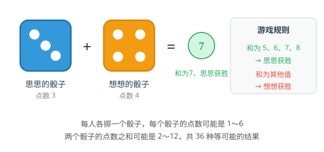
想一想：每个骰子的点数可能是：1、2、3、4、5、6，两个骰子的点数之和有哪些可能？这些数值出现的可能性一样吗？
规则说明：
两个骰子的点数之和为2、3、4，…，12时；
当点数之和为2、3、4、9、10、11、12时，想想获胜；
其他情况下思思获胜（即5、6、7、8）。
解一解：利用表格枚举出所有点数之和可能的情况（如下表所示）。
| 想想＼思思 | 1 | 2 | 3 | 4 | 5 | 6 |
|---|---|---|---|---|---|---|
| 1 | 2 | 3 | 4 | 5 | 6 | 7 |
| 2 | 3 | 4 | 5 | 6 | 7 | 8 |
| 3 | 4 | 5 | 6 | 7 | 8 | 9 |
| 4 | 5 | 6 | 7 | 8 | 9 | 10 |
| 5 | 6 | 7 | 8 | 9 | 10 | 11 |
| 6 | 7 | 8 | 9 | 10 | 11 | 12 |
总结：通过枚举表格可以看出，所有的可能性为36种，有20种情况思思获胜，有16种情况想想获胜，所以思思获胜的可能性大。
解析：
第一步：百位上的数可以是3，5，7；
第二步：借助"树状图"来枚举。
| 百位 | 十位 | 个位 | 此时的三位数 |
|---|---|---|---|
| 3 | 5 | 7 | 357 |
| 3 | 7 | 5 | 375 |
| 5 | 3 | 7 | 537 |
| 5 | 7 | 3 | 573 |
| 7 | 3 | 5 | 735 |
| 7 | 5 | 3 | 753 |
答案：357，375，537，573，735，753
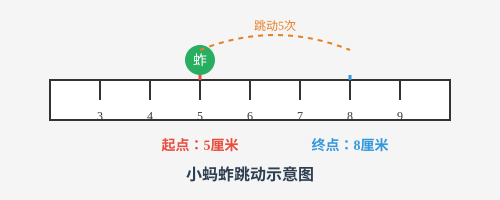
解析：
解题思路：跳了5次向右移动了3厘米，说明有1次往左跳动，4次往右跳动。
枚举：
5厘米→6厘米→5厘米→6厘米→7厘米→8厘米
5厘米→6厘米→7厘米→6厘米→7厘米→8厘米
5厘米→6厘米→7厘米→8厘米→7厘米→8厘米
5厘米→6厘米→7厘米→8厘米→9厘米→8厘米
5厘米→4厘米→5厘米→6厘米→7厘米→8厘米
答案：一共有5种跳动方式。
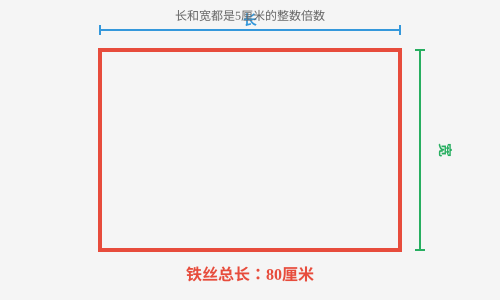
解析：
第一步：已知长方形的周长为80厘米，所以长与宽的和是40厘米。根据题意，运用表格列举出所有可能的情况。
| 长方形 | ① | ② | ③ | ④ |
|---|---|---|---|---|
| 长（厘米） | 35 | 30 | 25 | 20 |
| 宽（厘米） | 5 | 10 | 15 | 20 |
第二步：（计算过程）
第一种: 35×5 = 175(平方厘米)
第二种: 30×10 = 300(平方厘米)
第三种: 25×15 = 375(平方厘米)
第四种: 20×20 = 400(平方厘米)
第三步：计算出每种方法围成的长方形的面积并进行比较
20×20 = 400(平方厘米)
答案：当围成边长为20厘米的正方形时面积最大。
解析：
第一步：设这四个信封为A，B，C，D，对应的四封信分别为a，b，c，d。
第二步：如果信a装在信封B内，那么以"B（a）"的形式表示。
第三步：枚举装错信封的方法
A（b），B（a），C（d），D（c）；
A（b），B（d），C（a），D（c）；
A（b），B（c），C（d），D（a）；
A（c），B（a），C（d），D（b）；
A（c），B（d），C（a），D（b）；
A（c），B（d），C（b），D（a）；
A（d），B（a），C（b），D（c）；
A（d），B（c），C（b），D（a）；
A（d），B（c），C（a），D（b）；
答案：共有9种装错信封的方法。
解析：
第一步：上车最多的站是第一站，将"上车人数－下车人数"理解为人数的增加，第一站增加14人。
第二步：第二站上车13人，下车1人，增加12人；第三站上车12人，下车2人，增加10人；第四、五、六、七站分别增加8，6，4，2人；第八站时上车和下车都是7人，第九站起，车上的人数开始减少；
第三步：综上所述，汽车行驶在第7站至第9站之间，车上人数最多，需要安排14+12+10+8+6+4+2=56(个)座位。
答案：这辆公共汽车至少要有56个座位。
【老师说】枚举法看似简单，但要做到"不重不漏"需要耐心和条理。建议用表格或树状图辅助，养成有序枚举的习惯。竞赛中枚举法常与计数问题结合，是基础中的基础。
【易错点提醒】①枚举时容易遗漏某些情况，特别是边界值；②重复列举同一类情况；③分类标准不明确，导致混乱。
假设法就是在解决问题时，根据题目中的已知条件或结论做出某种假设，再结合其他的条件进行计算和推理，从而解决问题的方法。
假设法可以使复杂的条件变得简单，使隐蔽的数量关系变得明朗，使抽象的问题变得具体。在运用假设法时，可以假设几个具体数值、几个量相等或者某种情况是否发生，如果在计算和推理后出现矛盾，那么需要适当调整，从而找到正确答案。
笼子里有若干只鸡和兔，共有10个头，28只脚。问鸡和兔各有几只？（如图所示）
试一试：如果都是鸡（或兔），会有几只脚？想一想
解析：
(第一步)假设笼子里有10只鸡，共有10×2=20(只)脚。
(第二步)实际有28只脚，还多28-20=8(只)脚。
(第三步)多出来的8只脚，在某些鸡上各"装"2只脚，就把这部分鸡调整成兔，所以兔有8÷(4-2)=4(只)，鸡有10-4=6(只)。
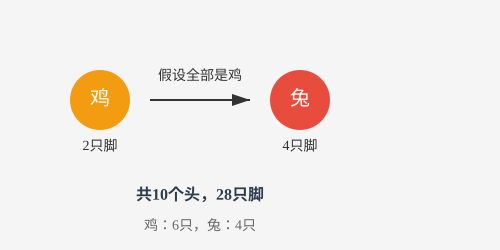
思思、想想两人同时出发进行跑步比赛，思思前一半路程的速度是5米/秒，后一半路程的速度是4米/秒；想想前一半时间的速度是5米/秒，后一半时间的速度是4米/秒。请问两人谁先到达终点？请说明理由。
想一想：两人跑步的路程相同，可假设为一个具体的数值
【解析】
方法1：
第一步：假设全程为360米。
(第二步)思思跑完全程用时为180÷5+180÷4 = 81(秒)。
(第三步)在求想想跑完全程所用的时间时，可以假设有两个"想想"分别以4米/秒和5米/秒的速度同时从两端相向而跑，相遇时间为360÷(4+5)=40(秒)，即所用时间的一半是40秒，于是想想一共用时40×2 = 80(秒)。
(第四步)因为81>80，所以想想所用时间少，先到达终点。
方法2：
(第一步)假设想想2秒跑完全程。
(第二步)全程长度也就是想想跑的距离为5＋4 = 9(米)。
(第三步)半程长度为9 ÷ 2 = 4.5(米)，所以思思跑完全程的时间为4.5÷5+4.5÷4 = 0.9 +1.125 = 2.025(秒)。
(第四步)因为2.025>2，所以想想所用时间少，先到达终点。
修一条公路，甲队单独修需要20天完成，乙队单独修需要30天完成。现两队合作，中途甲队休息了5天，请问完成任务时乙队工作了多少天？
想一想：甲队单独修20天完成，乙队单独修30天完成，则公路总长可假设为20与30的公倍数（单位:米）；也可以假设甲队没有休息。
方法1：
(第一步)假设这条公路长600米。
(第二步)甲队每天可修600÷20=30(米)；乙队每天可修600÷30=20(米)。
(第三步)甲队休息的5天中乙队修了5×20=100(米)；甲、乙两队合作的长度为600-100=500(米)。
(第四步)甲、乙两队合作的天数为500 ÷ (30 +20)=10(天)。
(第五步)所以完成任务时乙队工作了10+5 = 15(天)。
方法2：
(第一步)假设甲没有休息，甲队5天的工作量是1/20×5，到工作完成之日时，甲、乙两队合作的工作量为1+1/20×5 = 5/4。
(第二步)甲、乙两队合作的天数为5/4÷(1/20+1/30)=15(天)。
(第三步)所以完成任务时乙队工作了15天
解析：
(第一步)用线段图把题目中的已知信息表示出来。
（第二步）假设玫瑰花减少12盆、芍药花减少9盆，那么三种花的总数为180-(12+9)=159(盆)
(第三步)所以月季花有159 ÷ 3=53(盆)，玫瑰花有53+12 = 65(盆)，芍药花有53+9=62(盆)
答案：月季花有53盆，玫瑰花有65盆，芍药花有62盆。
解析：
第一步：假设12只都是螳螂，共有12×6=72(条)腿。
第二步：实际有82条腿，还多82-72=10(条)腿。
第三步：剩下的10条腿，在某些螳螂上各"装"2条腿，就把这部分螳螂调整成蜘蛛。
答案：所以蜘蛛有10÷(8-6)=5(只)，螳螂有12-5 = 7(只)。
解析：
第一步：假设生产总量是360件，则一厂的工作效率是360÷12 = 30(件/天)，二厂的工作效率是360÷18 = 20(件/天)。
第二步：假设15天全由二厂做，则共完成20 × 15 = 300(件)，比实际少360-300 = 60(件)，而二厂比一厂每天少做30 - 20=10(件)，60÷10 = 6(天)，说明一厂加工了6天，二厂加工了15- 6 = 9(天)。
答案：一厂加工了6天，二厂加工了9天。
解析：
第一步：假设第一次加入一定量的水后糖水共有100克，则糖的质量是100×15%=15(克)。
第二步：第二次加入水后糖水共有15÷12%=125(克)，则加水量是125-100=25(克)。
第三步：第三次加入同样多的水后糖水共有100+25+25=150(克)，而糖的质量没有发生变化，所以糖水浓度为15÷150=10%
答案：10%
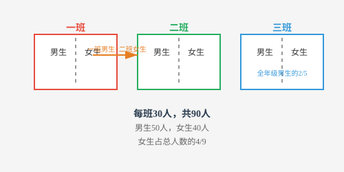
解析：
第一步：假设全年级男生为50人，则三班男生有50 × 2/5 = 20(人)
第二步：因为一班的男生人数与二班的女生人数相等（如图所示），推理得一班男生人数与二班男生人数相加就是一个班的总人数。
第三步：一班与二班男生总人数等于50-20=30(人)，即一个班的总人数也是30人。
第四步：求出全年级总人数为30×3=90(人)，全年级女生人数为90-50=40(人)
答案：所以全年级女生人数占总人数的40÷90=4/9
【老师说】假设法的核心公式是：另一类数量 = 差值 ÷ 单位差。记住口诀："全假设为甲，看差多少，差里有几个单位差，就有几个乙。"鸡兔同笼是经典，但假设法远不止于此。假设法的核心是"先假设，再调整"。通过假设全部为某一情况，找出与实际的差异，再根据差值进行调整。鸡兔同笼问题是假设法的经典应用，关键是理解"多出的脚数÷每只差=另一类的数量"。
【易错点提醒】①假设后忘记调整差值；②混淆"多出"和"不足"的方向；③除数和被除数搞反。
观察有关数据、图形的特点，进行分析、思考从而解决问题的方法称为观察法。观察法是通过对题目的结构形式、整体条件及相关图形等的观察，找出解决问题的关键；有时候也可以通过观察进行猜想，并对所做出的猜想进行验证。
每张多米诺骨牌都是由两个小方块组成，每个小方块上刻有"点数"，点数可以是1，2，3，4，5，6。如图按规律摆放了一排这样的骨牌，你知道最后一张骨牌的上半部分的点数吗？
想一想：从整体观察，每张多米诺骨牌的点数和是多少呢？
【解析】
第一步：先计算出每张骨牌的点数和，前8张依次为3，2，5，4，7，6，9，8；
第二步：观察每张骨牌的点数和，可以发现第1，3，5，7张骨牌的点数和分别为3，5，7，9，第2，4，6，8张骨牌的点数和分别为2，4，6，8。
第三步：因此最后一张骨牌（第9张）的点数之和是11，下半部分点数为5，所以上半部分点数为6。
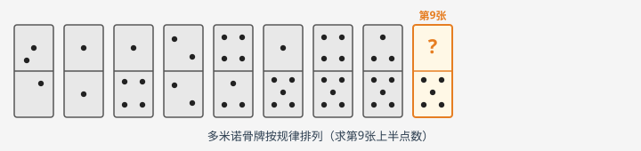
从边长为1的小正方形开始，以这个正方形的对角线为边作第2个正方形，再以第2个正方形的对角线为边作第3个正方形……如此下去，第15个正方形的边长是____。
想一想：第1个、第3个、第5个正方形的边长有什么规律呢？
【解析】
第一步：根据已知的图形，可以看到第一个正方形的边长是1，第3个正方形的边长是2，第5个正方形的边长是4，…
第二步：把第1，3，5，…个正方形组成一个新的正方形序列，发现后一个正方形的边长是前一个正方形边长的2倍。
第三步：综上所述，可得第15个正方形的边长是128（27）。
已知a3 = 50653，请问a的值是多少？
想一想：a在哪两个整十数之间呢？末尾数又是几呢？
【解析】
第一步：因为303=27000，403=64000，所以30<a<40。
第二步：从个位数字观察，列表如下：可知a的个位数字只能是7
第三步：综上所述，a的值是37。
解析：
第一步：观察条件，11×11=121，两位数相乘，积的中间数是2，111×111=12321，三位数相乘，积的中间数是3。
第二步：依次类推，八位数相乘，积的中间数为8。
答案：123456787654321
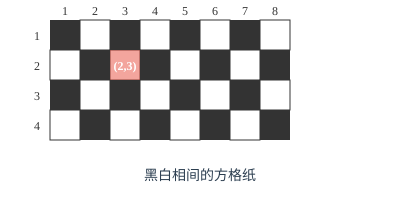
解析：
第一步：观察已知图表可发现整个图表的奇数行和偶数行有着各自的规律，(23,100)这一格位于从上往下数第23行，是奇数行。
第二步：根据图表可以发现奇数行方格的排列规律是第奇数列为黑色，第偶数列为白色，100是偶数，所以第100列为白色。
答案：即(23,100)，这一格为白色
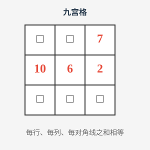
解析：
第一步：由第二行可得出，该九宫格的每一行、每一列、每一对角线的数字之和为10+6+2=18。
第二步：从图中第三列7+2+□=18会想到，18-7-2=9，所以第三列最下面的小方格中应填入9。
第三步：同理可得，从对角线上的□＋6＋9 =18可知九宫格左上角的小方格中应填入3；从另一条对角线上的7＋6＋□ = 18可知九宫格左下角的小方格中应填入5；从第一行3+□+7=18可知第一行中间的小方格中应填入8；从第三行5+□+9=18可知第三行中间的小方格中应填入4。
答案：
| 3 | 8 | 7 |
| 10 | 6 | 2 |
| 5 | 4 | 9 |
| 类别\季度 | 一 | 二 | 三 | 四 | 合计 |
|---|---|---|---|---|---|
| 冬装 | 1300 | 300 | 500 | 1200 | 3300 |
| 夏装 | 200 | 160 | 1400 | 300 | 3500 |
解析：
第一步：观察表格，可以发现夏装第二季度销售量比第一季度还少，结合生活实际，第二季度天气逐渐变热，夏装销售量应该明显上升，所以夏装第二季度的数据"160件"记录错误。
第二步：观察表格信息，可以发现当年夏装销售量合计为3500件，记录正确的一、三、四季度夏装销售量分别为200件、1400件、300件，所以第二季度正确的数据应该是3500-200-1400-300=1600件。
答案：抄错的数据是160件，正确的应是1600件。
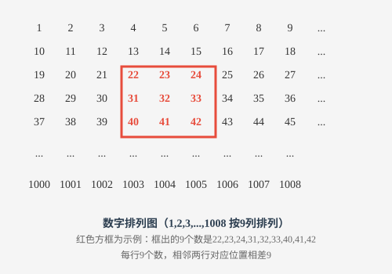
解析：1785和2349不能办到，1683能办到，对应的最小数为177，最大数为197。
第一步：首先找到被框住的9个数的规律：每一行是3个连续的整数，每列的相邻两数之差是9，9个数的和是正中间数的9倍。
第二步：因为1785不是9的倍数，所以无法框出这样的9个数，使它们的和为1785。
因为2349÷9=261，但进一步观察发现261在第9列，所以也无法框出这样的9个数，使它们的和为2349。
因为1683÷9=187，且187÷9=20……7，观察发现187在第7列，所以符合要求，根据187可以写出其余8个数，框住的9个数从小到大依次为177，178，179，186，187，188，195，196，197，所以框住的9个数中最小数是177，最大数是197。
答案：1785和2349不能办到；1683能办到，最小数是177，最大数是197。
【老师说】观察力是数学思维的起点。遇到规律题，先算前几个特例，再找共同点。观察时注意数字特征（奇偶、倍数）、位置关系、对称性等。好的观察习惯能让你事半功倍。观察法要求我们从题目中发现规律、找到突破口。解题时要仔细观察数字特征、图形变化、运算规律等，善于从特殊到一般，从简单到复杂，找到隐藏在表面之下的数学规律。
【易错点提醒】①只看表面不看本质；②观察不够全面，遗漏关键信息；③急于下结论，缺乏验证。
将问题中的信息用表格的形式反映出来并加以解决的方法，称为列表法。列表法常常与归纳法、排除法等结合使用，有助于理清条件和结论，更快地找到解题的方法和路径。
有50名学生（其中女生有18人）分别穿了蓝衬衫或者白衬衫，穿蓝衬衫的有31人，穿白衬衫的男生有14人。请问穿蓝衬衫的女生有几人？
解题步骤：
想一想：根据已知条件，如何列表来解题呢？
第一步：根据已知条件列出表格。
| 性别 | 蓝衬衫 | 白衬衫 | 合计 |
|---|---|---|---|
| 男生 | 14 | ||
| 女生 | 18 | ||
| 合计 | 31 | 50 |
第二步：根据以上条件，依次可得：男生有50-18=32（人），穿蓝衬衫的男生有32-14=18（人），穿白衬衫的学生有50-31=19（人），穿白衬衫的女生有19-14=5（人），穿蓝衬衫的女生有18-5=13（人）。同时可填表如下。
| 性别 | 蓝衬衫 | 白衬衫 | 合计 |
|---|---|---|---|
| 男生 | 18 | 14 | 32 |
| 女生 | 13 | 5 | 18 |
| 合计 | 31 | 19 | 50 |
答：所以，穿蓝衬衫的女生有13人。
一位老师带48名学生去公园划船（师生共49人），大船限乘5人，每条船租金是30元；小船限乘3人，每条船租金是21元。请问怎样租船最省钱？（如图所示）
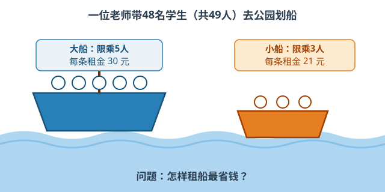
解题步骤：
想一想：租船问题既要兼顾"单人价格便宜"，又要兼顾"多余空位尽可能少"。借助列表法可以无遗漏地找到最省钱的租船方案。
（第一步）根据题意列出各种租船方案
| 方案 | 1 | 2 | 3 | 4 | 5 | 6 | 7 | 8 | 9 | 10 | 11 |
|---|---|---|---|---|---|---|---|---|---|---|---|
| 大船5人（30元） | 10 | 9 | 8 | 7 | 6 | 5 | 4 | 3 | 2 | 1 | 0 |
| 小船3人（21元） | 0 | 1 | 3 | 5 | 7 | 8 | 10 | 12 | 13 | 15 | 17 |
| 总座位数 | 50 | 48（不够） | 49 | 50 | 51 | 49 | 50 | 51 | 49 | 50 | 51 |
| 总钱数 | 300 | 291（座位不够） | 303 | 315 | 327 | 318 | 330 | 342 | 333 | 345 | 357 |
第二步：师生共49人，方案2只有48个座位，不够坐，应排除。比较其余可行方案可得：租10条大船最省钱，共300元。
在校运动会上，思思参加了4项比赛，A、B、C三人对思思获得冠军的数量猜测如下。
A：至少获得3项冠军；B：最多获得2项冠军；C：至少获得1项冠军。
比赛结束后，发现A、B、C三人中只有一人的猜测是对的。
问：思思获得了几项冠军？
解题步骤：
想一想：可以将思思可能取得的冠军数量和A、B、C三人的预测情况列表
第一步：因为思思共参加了4项比赛，所以思思获得冠军数共有5种情况，分别为0项，1项，2项，3项，4项，再根据题中A、B、C三人的猜测，分别把可能取得的冠军数量情况列出来，填入下表。
| 三人预测 | 0项 | 1项 | 2项 | 3项 | 4项 |
|---|---|---|---|---|---|
| A：至少获得3项冠军 | ✓ | ✓ | |||
| B：最多获得2项冠军 | ✓ | ✓ | ✓ | ||
| C：至少获得1项冠军 | ✓ | ✓ | ✓ | ✓ |
第二步：分析表中信息可得，"只有一人的猜测是对的"的情况就是思思获得0项冠军，所以只有B说对了。
答：所以，思思获得了0项冠军。
解析：
第一步：本题可以先思考其中一种车辆的数量，如先思考大车的数量，根据"货物总数为23吨"可以知道，大车派的数量可能为3辆、2辆、1辆、0辆，再通过列表的方式把每一种情况都列出来。
| 派车方案 | 大车（8吨）的数量 | 小车（5吨）的数量 | 可运货物总吨数 |
|---|---|---|---|
| 1 | 3辆 | 0辆 | 24吨 |
| 2 | 2辆 | 2辆 | 26吨 |
| 3 | 1辆 | 3辆 | 23吨 |
| 4 | 0辆 | 5辆 | 25吨 |
答案：大车派1辆，小车派3辆，恰好运完这些货物。
解析：
（第一步）列表如下。
| 原页码 | 186~212 | 213~223 | 224~400 | 401~563 | 564~588 |
|---|---|---|---|---|---|
| 现页码 | 197~223 | 186~196 | 224~400 | 426~588 | 401~425 |
第二步：答案如下
| 原页码 | 200 | 475 |
|---|---|---|
| 现页码 | 211 | 500 |
答案：原200页是现在第211页，现在500页是原来第475页。
解析：
第一步：把已知信息列成下表
| 学科 | 数学 | 物理 | 化学 | 英语 |
|---|---|---|---|---|
| 甲 | ✓② | ✓ | ||
| 乙 | ✓ | ✓④ | ||
| 丙 | ✓③ | ✓ | ||
| 丁 | ✓① |
第二步：观察上表，按①~④的顺序分析：①因为丁只能教化学，所以丁老师安排教化学；②化学已被选走，甲老师只能安排教物理；③物理已被选走，丙老师只能安排教数学；④乙老师安排教英语。
解析：
（第一步）将五名同学猜名次的情况列成下表。
| 名次 | 第一名 | 第二名 | 第三名 | 第四名 | 第五名 |
|---|---|---|---|---|---|
| A | B | C | |||
| B | E | D④ | |||
| C | A | E⑤ | |||
| D | C③ | B① | |||
| E | A② | D |
（第二步）观察上表，按①~⑤的顺序分析。
①因为题目告诉我们"每个名次都有人猜对"，从表中"第二名"这列可以看出被猜为第二名的只有B，所以B是第二名；
②对表中"第三名"这列进行分析，前面已经得出B是第二名，所以B不可能是第三名，那么A就是第三名；
③对表中"第一名"这列进行分析，前面已经得出A是第三名，所以A不可能是第一名，那么C就是第一名；
④对表中"第五名"这列进行分析，前面已经得出C是第一名，所以C不可能是第五名，那么D是第五名。
⑤最后剩下的E就是第四名。
答案：C是第一名，B是第二名，A是第三名，E是第四名，D是第五名。
解析：
第一步：将题中信息用下表呈现，标"●"表示这位学生参加了这次会议。
| 学生 | A | B | C | D | E | F | G | H |
|---|---|---|---|---|---|---|---|---|
| 参加第一次会议 | ● | ● | ● | ● | ||||
| 参加第二次会议 | ● | ● | ● | ● | ||||
| 参加第三次会议 | ● | ● | ● | ● | ||||
| 参加第四次会议 | ● | ● | ● | ● |
第二步：观察表格，可得到以下结论
A参加了第一次会议，D参加了第二、三、四次会议，所以A和D同班。
B参加了第一、三次会议，F参加了第二、四次会议，所以B和F同班。
C参加了第一、二次会议，H参加了第三、四次会议，所以C和H同班。
E参加了第一、四次会议，G参加了第二、三次会议，所以E和G同班。
答案：A和D同班，B和F同班，C和H同班，E和G同班。
【老师说】列表法的价值在于"让混乱变有序"。设计表格时先想清楚行和列分别代表什么。填完表后别急着下结论，多看几遍，找规律、找异常。列表法和枚举法常常配合使用。
【易错点提醒】①表格设计不合理，信息不完整；②填表时粗心出错；③列表后不会从表中提取规律。总结：列表法通过有序排列信息，使复杂关系一目了然。适用于条件较多、关系复杂的问题。列表时要注意分类标准统一、信息完整，善用表格发现规律和隐含条件。
在解决"大概""够不够""比较大小"等问题时，运用"四舍五入"、"估大"或"估小"来计算的方法称为估算法。估算法主要包括化整估算法、数位估算法、大小比较法等，运用估算法可以起到简化计算、化繁为简的效果。
计算：391×27=（ ）。
A.6557 B.8557 C.10557 D.12557
解题步骤：
想一想：题中的乘数391和27可以分别估算成哪两个数呢？
第一步：发现391<400，27<30，所以391×27<12000，排除D选项。
第二步：联想到"25×4"这个特殊的组合，可得391×27≈400×25=10000。
答：所以选C。
思思家的客厅长6.1米，宽4.5米，现在要铺地砖，请问准备100块边长为0.5米的正方形地砖够吗？（不计损耗）
解题步骤：
想一想：结合生活实际，地砖是可以切割铺设的，所以要将客厅面积与100块地砖的总面积进行比较。
第一步：在计算客厅面积时，可以把6.1米估小，6.1>6，计算得6×4.5=27（平方米）。
第二步：100块地砖的面积为0.5×0.5×100=25（平方米）
第三步：100块地砖最多只能铺设25平方米的地面，客厅面积估小后是27平方米，因此准备100块边长为0.5米的正方形地砖是不够的。
记S=(1+8/60)+(2+8/61)+(3+8/62)+…+(15+8/74)，请问S的整数部分是多少？
解题步骤：
想一想：求一个数的整数部分，需要确定它在哪两个整数之间，如何借助估算来实现呢？
第一步：由已知可得，各个加数的整数部分之和为1+2+3+…+15=（1+15）/2×15=120。
第二步：在8/60，8/61，8/62，…，8/74这15个真分数中，最小的是8/74，最大的是8/60，
所以，15×8/74<8/60+8/61+8/62+⋯+8/74<15×8/60，
故1<8/60+8/61+8/62+8/62+...+8/74<2。
答：所以S的整数部分是120+1=121。
解析：
第一步：把车辆数28估成30，把每辆车座位数估成60，可得30×60=1800（个）座位。
第二步：实际坐车人数为1781+39=1820（人），1820>1800。
第三步：即使车辆座位估多也不够坐，因此安排28辆车是不够的。
答案：不能。
解析：
第一步：裁纸时不能拼接所以把长方形的长和宽估小，并取整计算。8.1>8，6.2>6。
第二步：沿长方形的长边最多可以裁出16块边长为0.5分米的正方形：8÷0.5=16（块）；沿长方形的短边最多可以裁出12块边长为0.5分米的正方形：6÷0.5=12（块）。
第三步：因为16×12=192>180，所以能裁出180块。
答案：能。
解析：
第一步：记总分为S，则87.85≤S/11≤87.95。
第二步：可得966.35≤S<967.45，所以总分是967分。
答案：967分
解析：
第一步：因为平均数为10.74，计算（1+2+3+…+21）÷21=（1+21）×21÷2÷21=231÷21=11；
第二步：因为10.74<11，所以擦掉的两个数至少有一个大于11；
第三步：当从求和式中擦掉11，12后，平均数为（231-11-12）÷19≈10.95，不符合要求；
第四步：当从求和式中擦掉12,13后，平均数为（231-12-13）÷19≈10.84，不符合要求；
第五步：当从求和式中擦掉13,14后，平均数为（231-13-14）÷19≈10.74，符合要求。
答案：擦掉的两个数分别是13和14
解析：
第一步：观察分母部分，计算1/10+1/29=39/（10×29），1/11+1/28=39/（11×28），1/12+1/27=39/（12×27），……，1/19+1/20=39/（19×20）。
第二步：所以10×39/（19×20）<1/10+1/29+1/11+1/28+1/12+1/27+...+1/19+1/20<10×39/（10×29），即39/38<1/10+1/29+1/11+1/28+1/12+1/27+...+1/19+1/20<39/29。
第三步：计算发现分母部分为假分数，1除以假分数的结果肯定是真分数，真分数小于1，所以算式的整数部分是0。
答案：0。
【老师说】估算不是"差不多就行"，而是有策略的近似。常用技巧：取整、四舍五入、放大缩小。估算在选择题中特别有用，能快速排除明显错误的选项。培养数感从估算开始。
【易错点提醒】①估算时误差过大，方向判断出错；②忘记估算结果是近似值；③估算和精算混淆。
从结果出发，运用加法与减法、乘法与除法之间的互逆关系，通过逆推找到最初的数据，这种解决问题的方法称为倒推法，又称为还原法。倒推法常用于解答还原问题，在解答过程中，还可以和线段图、列表法结合。
解析：
想一想：操作次数比较多的时候，可以用倒推法来解决问题。
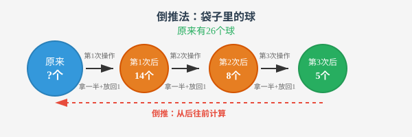
第一步：第2次操作后袋子中的球数为(5-1)×2=8。
第二步：第1次操作后袋子中的球数为(8-1)×2=14。
第三步：袋子原来的球数为(14-1)×2=26。
解析：
想一想：乙桶倒入甲桶多少千克呢？
第一步：乙桶倒入甲桶之前（第一次倒油后）甲桶应有油36÷2=18（千克），乙桶应有油36+18=54（千克）。
第二步：乙桶原有油应为54÷2=27（千克），甲桶原有油18+27=45（千克）。
解析：
想一想："500米"占"第一天修路后余下"的几分之几？
第一步：第一天修路后还剩的长度为500÷(1－2/7)=700（米）。
第二步：这段公路全长为(700+100)÷(1－1/5)=1000（米）。
解析：
第一步：第三次拿之前，筐里有(1+3)×2=8（个）。
第二步：第二次拿之前，筐里有(8+2)×2=20（个）。
第三步：第一次拿之前，筐里有(20+1)×2=42（个）。
答案：原来有42个鸡蛋。
解析：
第一步：除以6之前的数是6×6=36；
第二步：减去6之前的数是36+6=42；
第三步：乘以6之前的数是42÷6=7；
第四步：加6之前是7－6=1。
答案：这个数等于1。
解析：
第一步：从最后的结果1米逐步倒推，可知剪3次后剩下的绳子长为2米；
第二步：依此类推，可知绳子原来的长度为1×2×2×2×2=16（米）。
答案：16米。
解析：
第一步：在想想给思思画片之前，思思有画片24÷2=12（张），想想有画片24+12=36（张）。
第二步：在思思给想想画片之前，想想有画片36÷2=18（张），思思原有画片12+18=30（张）。
答案：思思有30张，想想有18张。
解析：
第一步：第一天用去后还剩(16－2)÷(1－1/3)=21（吨）。
第二步：这批水泥原有(21+1)÷1/2=44（吨）。
答案：44吨。
解析：
第一步：第二次运出后还剩(12+5)÷(1－1/2)=34（吨）。
第二步：第一次运出后还剩(34+3)÷(1－1/2)=74（吨）。
第三步：原有粮食(74+4)÷(1－1/2)=156（吨）。
答案：156吨。
【老师说】倒推法的关键是"逆向思维"。建议用表格记录每一步的变化，从最后一步开始逐步还原。特别注意：倒推时原来的加法变减法，乘法变除法，反之亦然。画图或列表能大大降低出错率。
【易错点提醒】①逆运算做错（加变减、乘变除搞混方向）；②漏掉某一步操作；③操作顺序搞反。
排除法是指在所有的可能结果中，把一切错误的结果排除，剩余正确结果的一种方法。
排除法在选择题和推理问题中运用较多，能排除问题中的冗余信息或者选项中的错误选项，把一些无关的问题予以排除，缩小选择范围，快速明确答案。
解析：
想一想：1□2×□9的计算结果是几位数？个位上应该是几？
第一步：1□2×□9的个位上应该是8，排除B选项。
第二步：1□2≤192，□9≤99，所以1□2×□9≤192×99=19008<20000，排除D选项。
第三步：1□2≥102，□9≥19，所以1□2×□9≥102×19=1938，排除A选项。
第四步：所以选C。
解析：
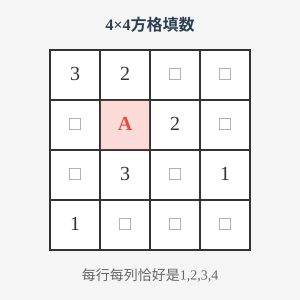
想一想：11个未知的方格中，从哪一个入手能找到突破口呢？
第一步：设第2行第1列的数为B，发现B所在的行有2，所在的列有1和3，所以B只能是4。
第二步：因为A所在的行有2，4，所在的列有3，所以A就是1。
解析：
想一想：如果某两个人说的话互相矛盾，能得出什么结论？
第一步：根据甲说的"丁是冠军"和丁说的"我不是冠军"可以看出两人的话相互矛盾，那么甲和丁的话一真一假。
第二步：因为只有一个人说了真话，所以乙和丙都说了假话，根据"丙说的'甲不是冠军'"为假，可知冠军是甲。
解析：
第一步：237×□5＞200×15＞3000，排除A选项；
第二步：237×□5＜200×95＜22800，排除D选项；
第三步：因为237为3的倍数，而11975不是3的倍数，排除C选项。
答案：选B。
解析：
第一步：丙的两张牌点数之积是24，只有"3×8"和"4×6"两种可能。
第二步：假设丙拿的是3和8，那么丁拿的是1和4。考虑剩下的2，5，6，7，9，甲拿的是2和6，乙拿的是5和9。
第三步：假设丙拿的是4和6，那么丁拿的是2和8。考虑剩下的1，3，5，7，9，甲拿的是1和7或者3和5。如果甲拿的是3和5，那么1，7，9这三张牌中没有两张牌点数之差是4，所以甲拿的是1和7，乙拿的是5和9。
答案：综上所述，乙手中的两张牌点数是5和9。
解析：
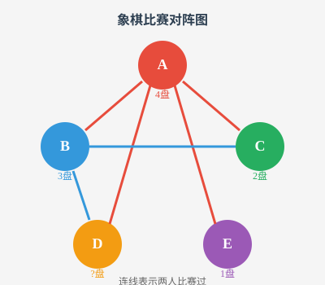
第一步：5个人进行象棋比赛，那么每人最多下4盘，根据A下了4盘为突破口连线。
第二步：A和B，C，D，E各下了1盘。E只下了1盘，是和A下的。B下了3盘，没有和E下，所以是和A，C，D下的。C下了2盘，是和A，B下的。
第三步：因为A和D下了1盘，B和D下了1盘，所以D下了2盘。
解析：
第一步：根据条件(1)和条件(2)列表得到：
| 项目 | 跳高 | 跳远 | 跳绳 |
| 甲 | ✕ | ||
| 乙 | ✓ |
第二步：再根据条件(3)和条件(4)可知丙不参加跳绳，参加了跳高和跳远，乙还参加了跳高。
| 项目 | 跳高 | 跳远 | 跳绳 |
| 甲 | ✕ | ✓ | ✓ |
| 乙 | ✓ | ✕ | ✓ |
| 丙 | ✓ | ✓ | ✕ |
答案：甲参加了跳远和跳绳，乙参加了跳高和跳绳，丙参加了跳高和跳远。
解析：
第一步：从标有"一个5g的红球和一个6g的红球"的盒子里拿一个红球称一下。
第二步：若称出该球重6g，则此盒子里装的是两个6g的红球；标有"两个6g红球"的盒子里装的是两个5g的红球；标有"两个5g红球"的盒子里装的是一个5g的红球和一个6g的红球。
第三步：若称出该球重5g，则此盒子里装的是两个5g的红球；标有"两个5g红球"的盒子里装的是两个6g的红球；标有"两个6g红球"的盒子里装的是一个5g的红球和一个6g的红球。
【老师说】排除法在选择题和推理题中特别好用。关键是要确保排除的依据充分可靠。排除后一定要验证剩下的答案是否满足所有条件。有时候正面做不出来，排除法就是你的救命稻草。
【易错点提醒】①排除不彻底，遗漏某些可能性；②排除的依据不充分；③排除后忘记确认剩下的选项。
利用平移变换及其性质解决问题的方法称为平移法。
运用平移法可以将较复杂图形转化为基本图形，从而有效解决周长和面积等问题。
计算右图的周长。（单位：厘米）
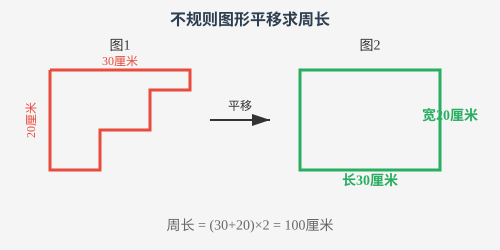
解析：
想一想：能否通过平移转化成一个基本图形？
第一步：如图，通过边的平移将图1转化成图2，这个不规则图形就转化为一个长方形。原图形的周长就转化为长30厘米、宽20厘米的长方形的周长。
第二步：该图形的周长为(30+20)×2=100（厘米）。
如图，在一块长32米、宽26米的绿地上，有一条宽2米的小路。请计算这条小路的面积。
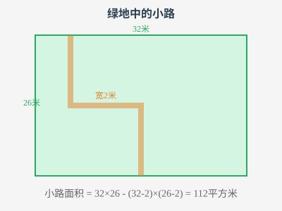
解析：
想一想：如何将不规则小路转化成规则小路？
第一步：如图1，把小路进行分割，然后分别向左、向下平移，得到图2。
第二步：用大长方形的面积减去小长方形的面积，得到小路的面积。
第三步：这条小路的面积为32×26-(32-2)×(26-2)=112（平方米）。
如图，平行线CD和EF表示河的两岸，点A、B表示隔河相望的两个村镇，要在河上架一座桥（桥与河岸垂直），请作图确定架桥的位置，使两个村镇之间的路程最短。
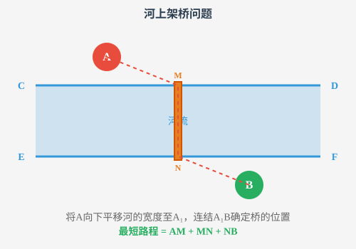
解析：
想一想：两点之间线段最短，如何运用？
第一步：将点A向下平移河的宽度至A₁。
第二步：连结线段A₁B与河岸线EF相交于点N，作MN垂直于河岸线CD，则MN为架桥的位置。
第三步：最短路程为AM+MN+BN，即AA₁+A₁B。
本题中，也可以将点B向上平移河的宽度至点B₁。连结AB₁，与河岸线CD的交点就是M。
如何说明AM+MN+NB为最短路程？可以假设另外一座桥M₁N₁（点M₁在CD上，点N₁在EF上），则AM₁+M₁N₁+N₁B=A₁N₁+AA₁+N₁B＞AA₁+A₁B=AM+MN+NB。
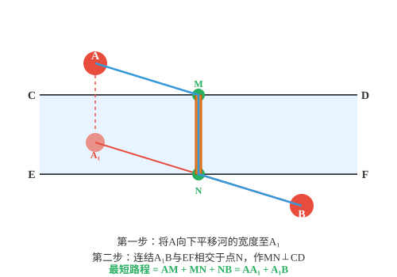
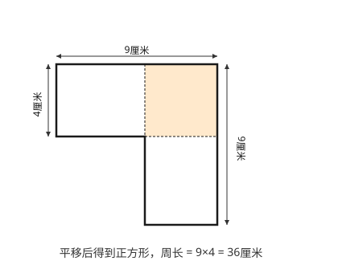
解析：
第一步：将该图形的边平移得到一个边长为9厘米的正方形；
第二步：周长为9×4=36（厘米）。
答案：36厘米。
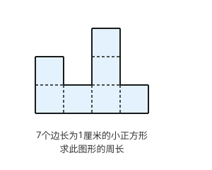
解析：
第一步：将图1中的几条边平移得到图2；
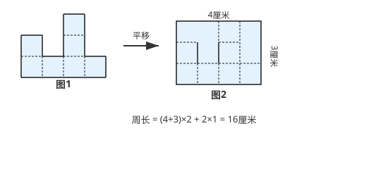
第二步：所求图形的周长就转化成一个长4厘米、宽3厘米的长方形的周长与2条1厘米的线段的和；
第三步：计算周长为（4+3）×2+2×1=16（厘米）。
答案：16厘米。
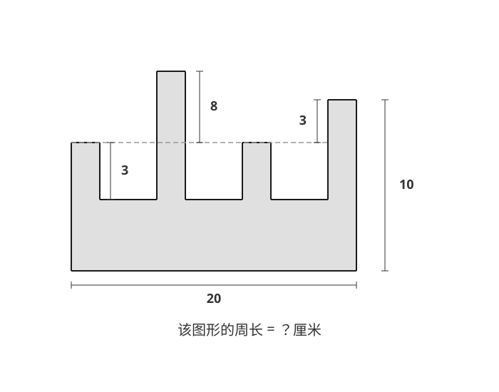
解析：
第一步：分别按箭头方向向上、向左、向右平移，得到长是20厘米，宽是15厘米的长方形，以及8条长度为3厘米的边。如图所示：
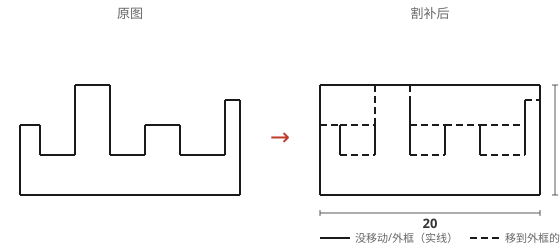
第二步：计算长方形的周长，再计算没有移动的8条长度为3厘米的边，得到原图形的周长为（20+15）×2+3×8=70+24=94（厘米）。
答案：94厘米。
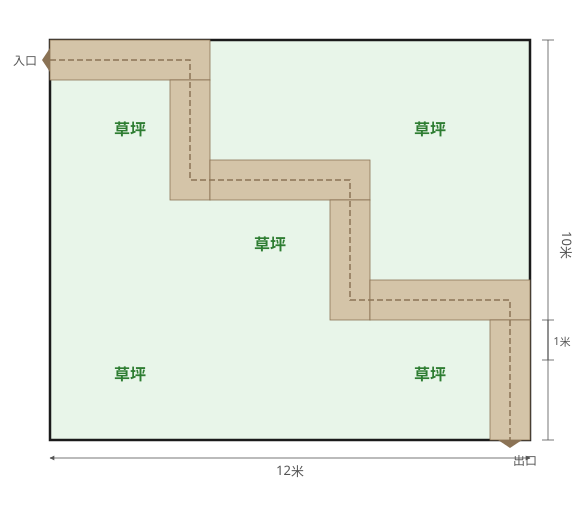
解析：
第一步：按行进方向将曲折小路分割成两类，一类是"横"的（左右方向行进的），一类是"竖"的（上下方向行进的），可以把"横"的移到最上端，"竖"的移动到最左端。
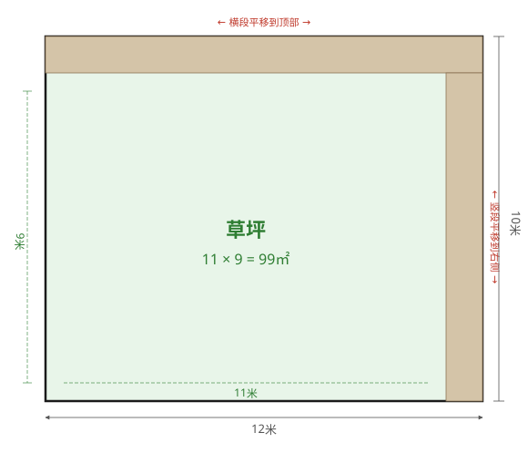
第二步：平移后的草坪相当于一个长11米、宽9米的长方形。
第三步：所以草坪的实际面积为11×9=99（平方米）。
答案：99平方米。
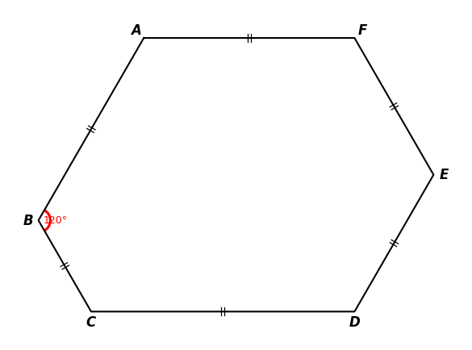
解析：
第一步：如图，将AB，CD，EF分别平移至QC，SE，PA处，可围成△SPQ。
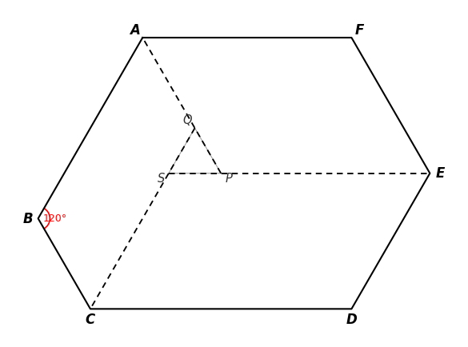
第二步：由题意AB-DE=CD-AF=EF-BC可知，SQ=SP=QP，得到△SPQ为等边三角形，故∠SQP=60°，于是可知∠AQC=120°。
第三步：由平行四边形对角相等得∠B=∠AQC=120°。
答案：∠B=120°。
【老师说】平移法的精髓是"化零为整"。把分散的线段通过平移拼到一起，就能看出整体的形状。求不规则图形的周长时，平移法特别管用。记住：平移不改变长度和角度。
【易错点提醒】①平移方向搞错；②平移后忘记保持长度/面积不变；③不规则图形的平移路径画错。
将一个或者多个图形先剪切，再拼成指定图形的方法称为剪拼法。
应用剪拼法时要抓住"剪、拼前后图形的面积相等"这个关键点，并根据剪拼前后图形的特点，通过分析推理和必要的计算，确定剪拼的方案。
对任意三角形，请设计一种方案，将它分成若干块，再拼成一个与原三角形面积相等的长方形（如图所示）。
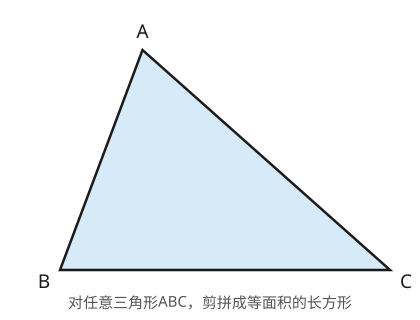
解析：
想一想：能否从直角三角形的剪拼入手找到任意三角形的剪拼方案？
第一步：设任意三角形ABC，取两腰中点M、N，沿中位线MN和高AH剪开，分成三块。
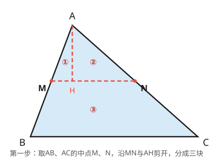
第二步：将①绕M、②绕N各旋转180°，拼成长方形。
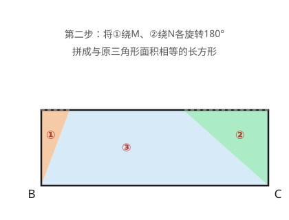
如图，长方形的长和宽分别为9厘米和4厘米。请把它剪成大小、形状都相同的两块，再拼成一个正方形。
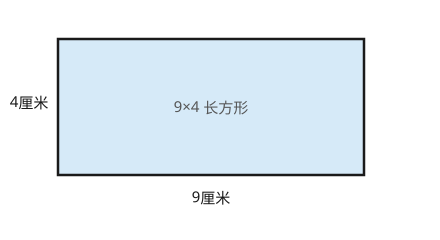
解析：
想一想：长方形的面积是9×4=36（平方厘米）。正方形的面积与长方形面积相等，其边长应为6厘米。怎么剪拼让图形变成边长为6厘米的正方形呢？
第一步：如图所示，沿台阶线剪开（台阶起点距左边3厘米、终点距左边6厘米，台阶高2厘米），得到大小、形状相同的两块。
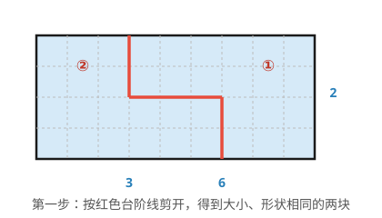
第二步：如图所示，把①向左平移3格、向上平移2格，拼合成边长6厘米的正方形。
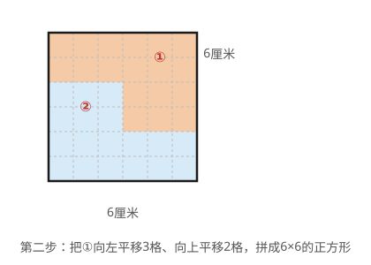
两个边长分别为3厘米和4厘米的正方形，它们拼成了如图所示的组合图形。你能将该组合图形剪两刀，再拼成一个大正方形吗？
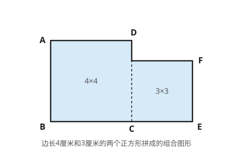
解析：
想一想：大正方形的边在哪里呢？
方法1：
第一步：因为3×3+4×4=25（平方厘米），所以大正方形的边长为5厘米。
第二步：在线段BE上取点M，使BM=2厘米，EM=5厘米。
第三步：在线段AB上取点N，使AN=1厘米，NB=3厘米。
第四步：如图，沿MP，NH剪开，将长方形ANHP和长方形BMHN放右上方的空白处，则正方形MEQK为拼成的大正方形。
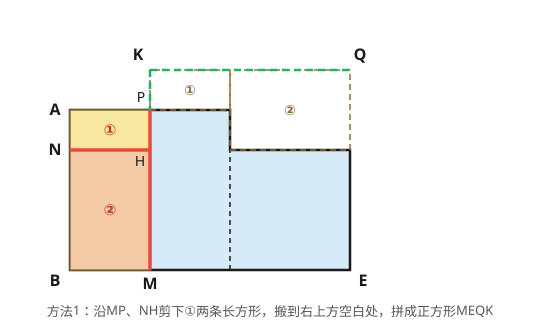
方法2：
第一步：如图，在线段BE上取点M，使BM=3厘米，EM=4厘米。
第二步：直角三角形ABM和直角三角形MEF的形状大小都一样，它们斜边AM和MF长度相等且互相垂直，可以作为大正方形的边。
第三步：沿AM，MF剪开，将三角形ABM绕点A逆时针旋转90°到三角形ADN处，将三角形MEF绕点F顺时针旋转90°到三角形NGF处，得到正方形AMFN。
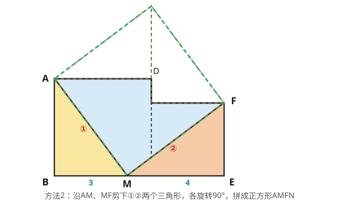
本题的方法2具有一般性，对任意边长的两个正方形，都可以拼成一个大正方形。进一步可以得到结论：任意n个正方形可以剪拼成一个大正方形。
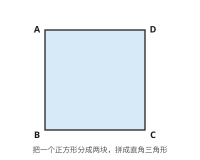
解析：
方法1：
第一步：沿着对角线剪开，得到两个相同的三角形。
第二步：如图，拼成一个直角三角形。
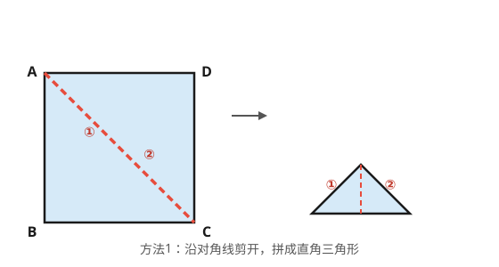
方法2：
第一步：将线段BC上的中点M与D相连，沿着线段MD剪开。
第二步：如图，拼成一个直角三角形。
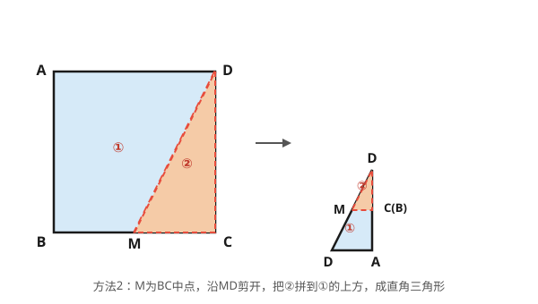
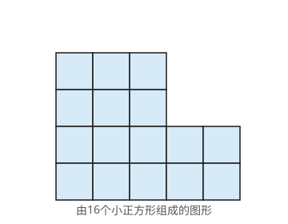
解析：
第一步：一共有16块小正方形，剪拼后的图形是4×4的正方形。每一块相同形状的部分由4块小正方形组成；
第二步：根据下图方式剪成4块，拼成一个正方形。
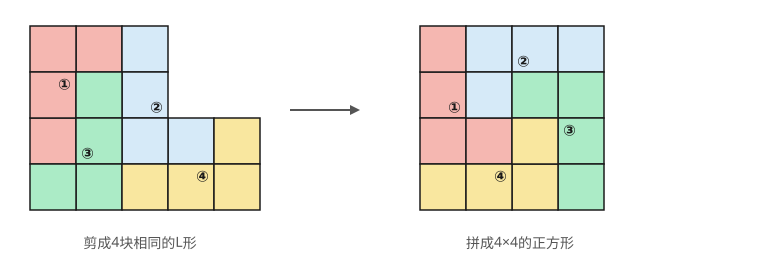
解析：
第一步：长方形的面积为50×32=1600（平方厘米），拼成的正方形面积与长方形的面积相等，所以正方形的边长为40厘米。
第二步：将长方形按下图方式剪开（台阶每步水平10厘米、竖直8厘米），把②向左10厘米、向上8厘米平移，拼成一个正方形。
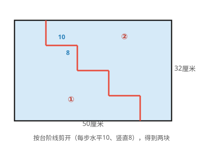
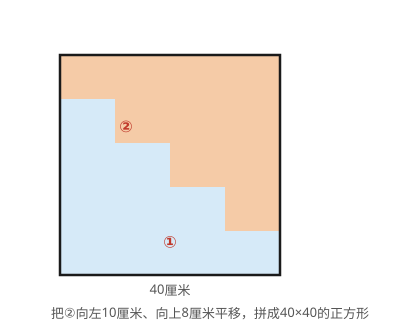
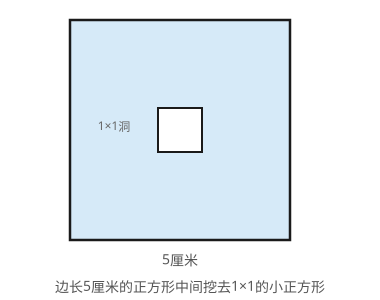
解析：
第一步：剪拼后长方形的面积是24平方厘米。只剪成两块，长方形的长和宽尽量和正方形边长相近。那么长方形长为6厘米，宽为4厘米。
第二步：将正方形按下图方式剪开（台阶线经过小洞的左边和上边缘），把②向右1格、向上1格平移，拼成一个长方形。
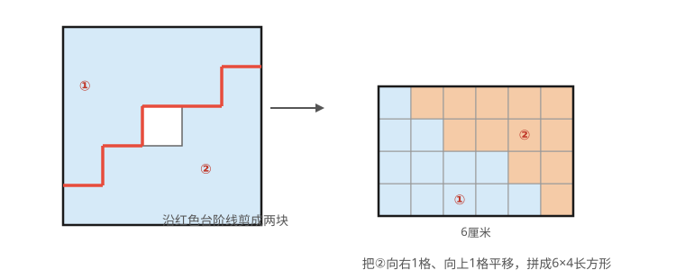
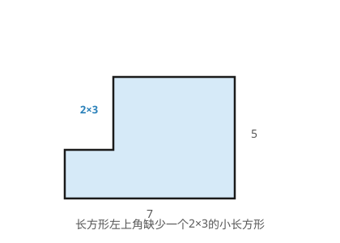
解析：
第一步：这个图形可以看成是由2×2和5×5的两个正方形组成的。
第二步：如图，在线段BC上取点M，使BM=5，CM=2。
第三步：直角三角形ABM和直角三角形MCD的形状大小都一样，它们的斜边AM和MD长度相等且互相垂直，可以作为大正方形的边。
第四步：沿AM，MD剪开，将三角形ABM绕点A逆时针旋转90°到三角形AFN处，将三角形MCD绕点D顺时针旋转90°到三角形NED处，得到正方形AMDN。
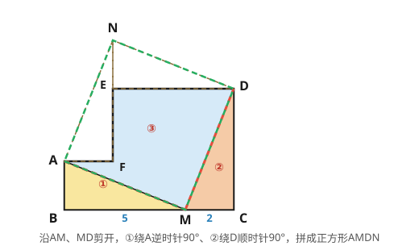
【老师说】剪拼法体现了"等积变换"的思想。关键原则：剪拼前后总面积不变。选择剪切线时，尽量使每个部分都是三角形或矩形等规则图形。多动手剪纸操作，培养空间想象力。
【易错点提醒】①剪拼过程中面积守恒被破坏；②剪切线选得不合理，拼不出规则图形；③计算面积时单位搞混。
归纳法是指根据原有数据、图形等的特点，推导出一般性结论的方法。
归纳法分为完全归纳法和不完全归纳法，小学阶段以不完全归纳法为主。
利用归纳法可以解决一些看起来复杂却又十分有趣的问题，比如：寻找相邻两个式子（或图形）的关系、寻找第n个式子（或图形）和n的关系、寻找总和（或整体）与n的关系等。
根据规律填数：
1.15，1.10，1.06，1.03，____，____
想一想：观察这些数的特点，从第二个数起，每一个与它前一个的差有什么规律呢？
解析：
第一步：从左往右观察，后一个数与前一个数的差依次为 0.05，0.04，0.03。
第二步：相邻的"差"之间又依次小 0.01，计算过程如图：
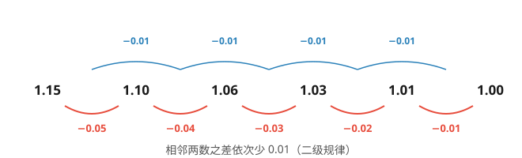
第三步：所以填 1.01，1。
答：两个空依次填 1.01、1。
一辆公共汽车在一条公路上行驶，公路上依次有6个汽车站A，B，C，D，E，F。汽车从A站出发，每到一站都停车，到达F站后又沿原路返回，仍是每到一站都停车，到达A站后再返回……如此往返行驶。如果汽车从出发后算起，每连续停车8次便需要在最后停车的那站加油，那么汽车在第2025次停车前的上一次加油是在哪站？
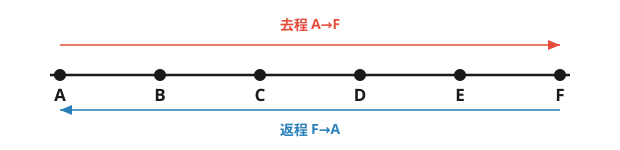
想一想：经过几站后，公共汽车又回到了A站，能从中发现什么规律吗？
解析：
第一步：整理停车顺序。从A出发，A为起点，不计入停车。去程停车：B(1)，C(2)，D(3)，E(4)，F(5)；返程停车：E(6)，D(7)，C(8)，B(9)，A(10)。完成一次A→F→A完整往返，一共停车10次，停车周期为10。
第二步：每连续停车8次加油一次，即加油发生在第8k次停车。2025÷8=253……1，所以第2025次停车之前的最近一次加油发生在第 8×253=2024 次停车。
第三步：停车周期为10，2024÷10 余 4，即第2024次停车与"第4次"停车相同，对应 E站。
验证：第8次停车（8 mod 10 = 8）对应C站；第16次停车（16 mod 10 = 6）对应E站；第2025次停车（2025 mod 10 = 5）对应F站。
答：第2025次停车前的上一次加油在 E站。
如图，把同样大小的黑色棋子摆放在正多边形的边上，按照这样的规律摆下去，第10个图形需要几个黑色棋子？第n个图形需要几个黑色棋子？
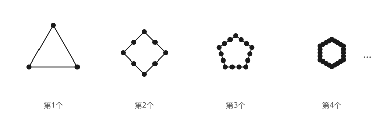
想一想：观察图形边数与黑色棋子个数的关系，能发现什么规律？
解析：
第一步：第1个图形是正三角形，需要1×3=3（个）黑色棋子；第2个图形是正方形，需要2×4=8（个）黑色棋子；第3个图形是正五边形，需要3×5=15（个）黑色棋子。
第二步：归纳得第10个图形是正十二边形，需要10×12=120（个）黑色棋子。
第三步：第n个图形是正(n+2)边形，需要(n²+2n)个黑色棋子。
| 第1列 | 第2列 | 第3列 | 第4列 | |
|---|---|---|---|---|
| 第1行 | 1 | 3 | 5 | 7 |
| 第2行 | 15 | 13 | 11 | 9 |
| 第3行 | 17 | 19 | 21 | 23 |
| 第4行 | 31 | 29 | 27 | 25 |
| ……（偶数行从大到小排列） | ||||
解析：
第一步：因为2025是第1013个奇数，1013÷4=253……1，所以2025在第254行。
第二步：第254行是偶数行，数从大到小排列，可得2025在第4列。
答：2025在第254行第4列。
解析：
第一步：第13个数是9，则第11个与第12个数之和是20−9=11。
第二步：第10个数是20−11=9。
第三步：第8个数与第9个数之和是20−9=11。
第四步：第7个数是20−11=9。依次类推，第5个数与第6个数之和是11，第4个数是9，第2个数与第3个数之和是11。
第五步：由于第2个数是1，因此第3个数是10，进一步可得第9个数是10。
答：第9个数是 10。
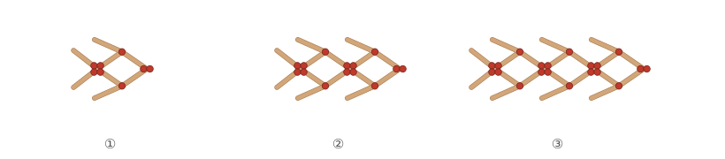
解析：
第一步：摆1条"小鱼"需要火柴棒8（根）；摆2条需要8+6×1=14（根）；摆3条需要8+6×2=20（根）；摆4条需要8+6×3=26（根）。
第二步：摆n条"小鱼"需要火柴棒8+6(n−1)=6n+2（根）。
第三步：令6n+2=122，可得n=20。
答：摆4条需要 26 根；122根火柴棒可以摆 20 条"小鱼"。
解析：
第一步：如图，从第2个图开始，补上蓝色小正方形得到边长为1的大正方形。
第二步：通过观察发现：第2个图形中白色小正方形的面积为1/2平方厘米，第3个图形中白色小正方形的面积为1/3平方厘米。因此，第4个图形中白色小正方形的面积为1/4平方厘米。
第三步：归纳发现，第n个图形中白色小正方形的面积为1/n平方厘米。
答：第4个图形的面积是 1/4 平方厘米；第n个为 1/n 平方厘米。
解析：
每幅图中，直角三角形的个数是小长方形个数的2倍。
第一步：第1幅图，直角三角形的个数为2×1²=2，边数为3×1²+2×1=5；第2幅图，个数为2×2²=8，边数为3×2²+2×2=16；第3幅图，个数为2×3²=18，边数为3×3²+2×3=33。
第二步：归纳发现，第n幅图中，直角三角形的个数为2×n²=2n²，边数为3n²+2n。
第三步：第10幅图中，直角三角形的个数为2×10²=200，边数为3×10²+2×10=320。
答：n=10时分为 200 个直角三角形，共有 320 条边。
【老师说】归纳法是从特殊到一般的推理过程。先算几个小例子，找规律，再验证。但要注意：归纳出的规律需要证明才严谨。竞赛中，归纳法常用于数列、图形计数等问题。
【易错点提醒】①从少量特例就下结论，不够严谨；②归纳的规律只适用于部分情况；③忽略特殊情况或边界条件。
整数可以分为两类：奇数与偶数。利用奇数与偶数的分类及其特殊性质，以简捷地求解一些与整数有关的问题，把这种通过分析整数的奇偶性来解决问题的方法称为奇偶分析。
运用奇偶分析往往需要用到奇偶数的运算性质：
（1）奇数不等于偶数；
（2）偶数±偶数=偶数，奇数±奇数=偶数，偶数±奇数=奇数；
（3）奇数×奇数=奇数，奇数×偶数=偶数，偶数×偶数=偶数；
（4）奇数个奇数之和为奇数，偶数个奇数之和为偶数。
围棋盘上有19×19个交叉点，每个交叉点上放了黑子或白子。请问能否把全部黑子和全部白子互换位置呢？
想一想：按要求摆放黑白棋子，一共要放多少棋子？黑白棋子换位，有什么要求？
解析：
第一步：19×19的积是一个奇数，棋盘上摆满棋子，总共要放奇数颗棋子。
第二步：黑白棋子间全部换位，要求黑白棋子数必须相等，棋子总数为偶数。
第三步：奇数不等于偶数，所以黑白棋子不能全部互换。
在黑板上写三个自然数，每次操作如下：用其中某两个数之和再减去1的差替换第三个数，如此操作多次，最后得到5，11，2023。问原来的三个数能否为2，2，2呢？
想一想：从2，2，2出发操作几次，能发现什么？
解析：
第一步：原来三个数是偶数，那么操作一次后黑板上有两个偶数和一个奇数。
第二步：接下去的一次操作：如果擦去一个偶数，那么得到的新数仍然是偶数；如果擦去一个奇数，那么得到的新数仍然是奇数。于是，这一次操作后黑板上仍是两个偶数和一个奇数。
第三步：继续操作，黑板上都是两个偶数和一个奇数。即由2，2，2开始，不论操作多少次后总是得到两个偶数和一个奇数，不可能得到三个奇数5，11，2023。所以原来的三个数不可能为2，2，2。
现有9个杯口朝上的杯子，将某4个杯子都翻转一次记为一次操作，能否操作几次，使它们杯口全部朝下？
想一想：杯口朝上的一个杯子要翻转几次才能让杯口朝下？9个杯口朝上的杯子总共需要翻转奇数次还是偶数次才能使杯口全部朝下？
解析：
第一步：因为杯口朝上的一个杯子翻转奇数次能让杯口朝下，翻转偶数次则杯口朝上，要使杯口朝上的9个杯子的杯口全部朝下，总的翻动次数必须是奇数。
第二步：每操作一次，就是翻转4个杯子，不论操作多少次，总的翻动次数都是偶数。
第三步：所以不论操作多少次都不能使9个杯子的杯口全部朝下。
解析：
第一步：由"奇数×奇数=奇数"得133×79的积为奇数，而24是偶数，再由"奇数＋偶数=奇数"得133×79＋24的计算结果为奇数。
第二步：10532是偶数，奇数≠偶数（注：判别方法不唯一，也可从等式左边计算结果个位上的数字去判断）。
答：思思做得不对。
解析：
第一步：每一张纸上有正反两个页码，这两个页码之和为奇数；
第二步：任选8张纸。这8张纸上的页码之和为8个奇数之和，所有页码之和为偶数。
第三步：而211是奇数，所以页码之和不可能是211。
本题也可以从整体上考虑：16个页码之和一定是8个奇数和8个偶数之和，结果一定是偶数。
解析：
第一步：思思每拿棋子一次，甲盒中的棋子就减少一颗，甲盒中共有361颗棋子，所以要拿360次后，甲盒中才剩下最后一颗棋子。
第二步：思思每次从甲盒中拿出的黑棋子数是0或2，都是偶数，而甲盒中黑棋子总数是奇数，所以甲盒中黑棋子数始终为奇数。
第三步：当甲盒中只剩下一颗棋子时，是奇数，这颗棋子一定是黑色的。
答：要拿 360 次；剩下的这颗棋子是 黑色 的。
解析：
第一步：对展览室的方格用黑白两色染色，使得每相邻两个格子的颜色互不相同，染色情况如图所示（用阴影部分表示黑色）：
第二步：由图可知，不论怎么走，参观者总是从白色房间进入黑色房间，或者从黑色房间进入白色房间。因此，可以将路线表示为：
白（入口）→1黑→2白→3黑→4…→n−1黑→n白（出口）
第三步：由入口和出口都为白色房间可知n为偶数。
第四步：因为展览室的总数为24，所以n=23为奇数，这与n为偶数矛盾，因此，所求的线路不存在。
解析：
第一步：开始时每一枚硬币都是正面朝下，要使所有硬币正面朝上，则每一枚硬币都需要翻动奇数次。
第二步：一共翻动的次数为1+2+3+…+2025=1013×2025，相当于2025枚硬币，每一枚都翻动了1013次，即2025个奇数1013相加。
第三步：这些硬币都可以翻动奇数次，经过2025次操作后，它们全部正面朝上。
具体翻动方法不唯一，现在给出一种硬币翻动情况：第1次操作翻动第1枚硬币，第2次操作翻动第1枚至第2枚硬币，…，第1012次操作翻动第1枚至第1012枚硬币，第1013次操作翻动第1013枚至第2025枚硬币（后面的1013枚硬币），第1014次操作翻动第1012枚至第2025枚硬币，…，第2025次操作翻动第1枚至第2025枚硬币。这样的翻动符合每次的操作要求，每一枚硬币都翻动了1013次，所以这些硬币经过2025次操作可以正面朝上。
【老师说】奇偶分析是"轻量级"的解题工具，不需要精确计算就能判断。核心规则：奇±奇=偶，奇±偶=奇，偶±偶=偶；奇×奇=奇，偶×任何=偶。遇到"是否存在"的问题，先试奇偶分析。
【易错点提醒】①奇偶运算规则记混（特别是减法）；②忘记0是偶数；③奇偶分析只能判断有无解，不能求出具体值。
通常，我们将通过移动使数量由不等变为相等的方法称为移多补少。移多补少是一种常见的思考方法，具体的问题可以是移动后使两部分同样多，或移动后两部分仍有相差，或移动后成倍数关系。
思思有10架纸飞机，思思给想想3架后，这时他们的纸飞机相差2架。请问想想原来有多少架纸飞机？（如图所示）
想一想：相差2架，到底谁多谁少？能不能构成相等关系呢？
解析：有两种可能。把想想原有的纸飞机架数看作"□"。
（1）如果想想少2架。
第一步：想想原有的纸飞机架数加思思给的3架，再加上少的2架，就和思思现在的架数同样多，得到：□+3+2 = 10−3。
第二步：由上得出：□=2，即想想原来有2架纸飞机。
（2）如果想想多2架。
第一步：想想原有的纸飞机架数加思思给的3架，再减去多的2架，就和思思现在的架数同样多，得到：□+3−2 = 10−3。
第二步：由上得出：□=6，即想想原来有6架纸飞机。
综上，想想原来可能有 2架 或 6架 纸飞机。
甲、乙两个书架共存放图书630本，乙书架的本数是图书总数的2/9，要使乙书架的本数是图书总数的5/9，应从甲书架取出多少本书放到乙书架呢？
想一想：乙书架移动前后相差的本数和什么有关呢？
解析：乙书架移动前后相差的本数和它先后在两个书架总本数中的份数有关。
方法1：
第一步：乙书架移动前后相差的份数：5/9 − 2/9 = 3/9。
第二步：每份的本数：630÷9=70（本）。
第三步：乙书架得到的本数即甲书架移给乙书架的本数：70×3=210（本），也就是630÷9×(5−2)=210（本）。
方法2：
第一步：乙书架移动前后相差的分率：5/9 − 2/9 = 3/9。
第二步：乙书架得到的本数即甲书架移给乙书架的本数：630×3/9 = 210（本），也就是630×(5/9−2/9)=210（本）。
答：应从甲书架取出 210 本放到乙书架。
有甲、乙两包糖，甲包的质量是乙包的4倍。现在从甲包取出130千克放入乙包后，甲包的质量是乙包的7/5。原来甲包有多少千克？
想一想：移动前后，什么没变？什么变了？
解析：移动前后，两包糖的总质量没变，甲、乙两包占总质量的份数都变了。
原来，甲包的质量是乙包的4倍，说明甲包的质量是总质量的4/5（甲:乙=4:1，甲占全部：4/(4+1)=4/5）。现在，甲包的质量是乙包的7/5，说明甲包的质量是总质量的7/12。
方法1：
第一步：因为和的分母5和12的最小公倍数为60，所以把两包糖移动前后的总质量都看成60份。
| 项目 | 甲 | 乙 | 总数 |
|---|---|---|---|
| 原来 | 48份 | 12份 | 60份 |
| 现在 | 35份 | 25份 | 60份 |
第二步：移动前后，甲包占总质量的份数差：48−35=13。
第三步：两包糖总质量60份中1份的质量：130÷13=10（千克）。
第四步：甲包原来的质量：10×48=480（千克）。
方法2：
第一步：移动前后，甲包占总质量的分率差：4/5 − 7/12 = 13/60。
第二步：甲、乙两包糖的总质量：130 ÷ 13/60 = 600（千克）。
第三步：甲包原来的质量：600×4/5=480（千克）。
答：原来甲包有 480 千克。
解析：
前三门学科的平均分(92+94+87)÷3=91（分），四门学科平均分为91+1=92（分）。所以，小强英语成绩为92+1×3=95（分）。
答：小强英语得了 95 分。
解析：
现在已煎好的和未煎好饺子相差25×2=50（个）。
答：现在相差 50 个。
解析：
（1）变换后，蓝气球少7个。
第一步：2个红气球换成蓝气球后，红气球还剩15−2=13（个）。
第二步：蓝气球现在有13−7=6（个）。
第三步：蓝气球原来有6−2=4（个），也就是15−2×2−7=4（个）。
（2）变换后，蓝气球多7个。（注意：容易漏掉这种情况）
第一步：2个红气球换成蓝气球后，红气球还剩15−2=13（个）。
第二步：蓝气球现在有13+7=20（个）。
第三步：蓝气球原来有20−2=18（个），也就是15−2×2+7=18（个）。
答：蓝气球原来有 4 个或 18 个。
解析：变换前后两种树的总棵数不变。
方法1：
第一步：把变换前后的总棵数都看成35份。
第二步：变换前后，柳树占总棵数35份中的份数差：15−14=1。
第三步：总棵数35份中1份的棵数，也就是杨树换成柳树的棵数：1400÷35=40（棵）。
方法2：
第一步：变换前后，柳树占总棵数的分率差：3/7 − 2/5 = 1/35。
第二步：杨树换成柳树的棵数：1400×1/35 = 40（棵），也就是1400×(3/7−2/5)=40（棵）。
答：实际将 40 棵杨树换成了柳树。
解析：移动前后两个书架的总本数不变。
方法1：
第一步：移动前，甲书架的本数占两个书架图书总本数的5/8。移动后，甲书架的本数占两个书架图书总本数的4/9，把移动前后的总本数都看成72份，5/8=45/72，4/9=32/72。
第二步：移动前后，两个书架的本数占总本数72份中的份数差：45−32=13。
第三步：总本数72份中1份的本数：52÷13=4（本）。
第四步：两个书架存放图书总本数：4×72=288（本）。
方法2：
第一步：移动前后，甲书架的本数占总本数的分率差：5/8 − 4/9 = 13/72。
第二步：两个书架存放图书总本数：52 ÷ 13/72 = 288（本）。
答：两个书架共存放图书 288 本。
【老师说】移多补少的核心公式：移动量 = 差 ÷ 2。注意是从多的移向少的。如果涉及三人或更多人，可以先求出平均数，再算每人需要移入或移出多少。画线段图辅助理解最直观。
【易错点提醒】①忘记移动量是差的一半；②移动方向搞反；③涉及三人以上时计算出错。
解决问题时，有时从问题的正面思考比较困难，转而从反面出发破解问题，这样的方法称为正难则反。
正难则反是数学解题的重要方法和技巧，可以考虑原问题的对立面，也可以借助逆向思维来解决问题。
有32名男选手参加乒乓球单打比赛，比赛采取淘汰制，即每场比赛淘汰1人。请问要决出冠军，需要比赛多少场？
想一想：本题从正面考虑，可知需比赛16+8+4+2+1=31（场）。能从反面出发破解问题吗？
解析：
第一步：因为每比赛1场，淘汰1名运动员。
第二步：要决出冠军，需淘汰31名运动员，所以需要比赛31场。
已知a，b，c三个数中，一个是1，一个是2，一个是3。你能说明(a+5)×(b+6)×(c+7)一定是偶数吗？
想一想：要说明(a+5)×(b+6)×(c+7)为偶数，只要说明三个因数中有一个偶数即可。
解析：
第一步：假设(a+5)×(b+6)×(c+7)是奇数，则(a+5)，(b+6)，(c+7)都为奇数。
第二步：于是a为偶数，b为奇数，c为偶数，这与a，b，c的取值矛盾。
第三步：所以假设不成立，说明(a+5)×(b+6)×(c+7)一定是偶数。
今有1元纸币一张，2元纸币一张，5元纸币一张，10元纸币四张，50元纸币两张，请问可以组成多少种不同的币值？
想一想：此题中能组成的最小币值、最大币值分别是多少？它们之间的金额（整数元）都能组成吗？
解析一（从反面出发，减去凑不出的）：
第一步：确定最小、最大币值。能组成的最小币值为1元，最大币值为所有纸币总和：1+2+5+10×4+50×2=148（元）。
第二步：找出1~148元中无法组成的币值。因为1元、2元、5元各只有一张，只能凑出0、1、2、3、5、6、7、8元，无法凑出个位为4、个位为9的金额。个位是4的共15个（4，14，…，134，144）；个位是9的共14个（9，19，…，129，139）。无法组成的币值共15+14=29（种）。
第三步：计算可组成的币值种数：148−29=119（种）。
解析二（正面验证）：
各类纸币选取情况：1元、2元、5元各2种，10元5种，50元3种。包含0元的全部组合数2×2×2×5×3=120；全部不取即为0元，不属于有效币值：120−1=119。校验：1元、2元、5元只可以组合出0，1，2，3，5，6，7，8共8种，无重复币值；再与10元、50元的金额叠加，不会产生重复币值。
答：可以组成 119 种不同的币值。
解析：
第一步：减去的部分1/10+1/100+1/1000+…+1/10000000000 = 0.1111111111。
第二步：原式 = 1 − 0.1111111111 = 0.8888888889。
答：结果是 0.8888888889。
解析：
第一步：计算1000个小正方体中每个面都没有涂色的小正方体有8×8×8=512（个）。
第二步：至少有一面涂色的小正方体有1000−512=488（个）。
答：至少有一面涂色的小正方体有 488 个。
解析：用反证法（抽屉原理）。
第一步：假设最多只有3只猴子分到的花生一样多。
第二步：将100只猴子编号为1，2，…，100。要使总花生数量尽可能少，取0，1，2，…，32各分给3只猴子，剩余1只猴子分33粒：第1~3号猴子没有分到花生，第4~6号猴子各分到1粒花生，第7~9号猴子各分到2粒花生，…，第97~99号猴子各分到32粒花生，第100号猴子分到33粒花生。这种情况所需花生数量最少，共需花生3×(0+1+2+…+32)+33=1584+33=1617（粒）。
第三步：要实现"最多3只猴子花生数相同"，最少需要1617粒花生，而现有花生只有1600粒，1617>1600，条件无法实现，假设不成立。所以，不管怎样分，至少有4只猴子分到的花生一样多。
补充说明：允许猴子分到0粒花生（默认有的猴子分不到花生）。
解析：
第一步：从1，3，9，27，81这5个数中每次任取1个或几个不同的数求和，除去全都不取，一共可以得到2⁵−1=31个不同的和（补充原理：这是三进制子集和，任意不同子集求和结果不会重复）。
第二步：从小到大依次排列的第28个和，即从大到小排列的第31−28+1=4个和。全部数总和为1+3+9+27+81=121。
第三步：和从大到小排，可转化为121的减数从小到大排：0，1，3，(1+3)，…。即：第1个121（全部取）、第2个120=121−1、第3个118=121−3、第4个117=121−(1+3)。
第四步：所以从小到大排列第28个和为117。
答：第28个和是 117。
解析：
第一步：假设从A，B，C，D出发的三根小棒均不能构成三角形。
第二步：不妨设AB是最长的小棒，则AC+AD≤AB，BC+BD≤AB，从而有AC+AD+BC+BD≤AB+AB。 ①
第三步：在△ABC中，有AC+BC>AB；在△ABD中，有AD+BD>AB，从而有AC+BC+AD+BD>AB+AB。 ②
第四步：发现①和②出现矛盾，因此假设不成立，说明在A，B，C，D中一定可以找到一个点，从它出发的三根小棒可以构成一个三角形。
【老师说】当正面求解很复杂时，想想反面是不是更简单。经典应用：淘汰赛的场次问题（总人数−1=比赛场数）、"至少"问题用反面做。记住：正难则反，柳暗花明。
【易错点提醒】①"反面"的范围搞错（多减或少减）；②用总数减反面时，总数搞错；③反证法的假设不够明确。
整体思想就是从问题的整体性质出发，把某些式子、图形或操作程序看成一个整体，在已知条件和所求问题之间进行关联，进行有目的、有意识的整体处理的方法。
整体思想要求在分析问题时调整视角，把研究的问题作为有机整体的一部分，从全局入手，深刻分析、不拘小节，抓住问题的本质。
甲杯装有100毫升水，乙杯装有100毫升酒精。从甲杯倒出30毫升溶液到乙杯，再从乙杯倒出30毫升溶液到甲杯，上述过程再重复一次。问：甲杯中的酒精与乙杯中的水哪个多？
想一想：整体思考，两只杯子里的液体总量变了吗？
解析：
第一步：假设以上过程完成后，甲杯中有酒精x毫升；
第二步：那么同样有x毫升水被倒入乙杯；
第三步：所以水中的酒精与酒精中的水是同样多的。
如图，已知单位方格的面积为1cm²，你能求出△ABC的面积吗？
想一想：直接求出三角形的底和高较难，能否应用整体思想借助补形进行转化呢？
解析：
第一步：如图，作出长方形ADEF，发现S△ABC=S长方形ADEF−S△ADB−S△CBE−S△AFC。
第二步：因此S△ABC=4×3 − ½×2×4 − ½×1×3 − ½×3×1 = 12−4−1.5−1.5=5。
有两组数，第一组：1/6，1/12，1/20，1/30，1/42；第二组：1/8，1/24，1/48，1/80。从每组中各取出一个数相乘，一共能得到20个乘积。这20个乘积的总和是多少？
想一想：除了把两组数分别相乘再相加，还有其他方法吗？能否从整体的角度入手呢？
解析：
第一步：第一组中的1/6与第二组中每个数相乘，4个积的和为1/6×(1/8+1/24+1/48+1/80)；1/12与第二组中每个数相乘，4个积的和为1/12×(1/8+1/24+1/48+1/80)；…；1/42与第二组中每个数相乘，4个积的和为1/42×(1/8+1/24+1/48+1/80)。
第二步：乘积的总和=(1/6+1/12+1/20+1/30+1/42)×(1/8+1/24+1/48+1/80)。
第三步：=(70/420+35/420+21/420+14/420+10/420)×(30/240+10/240+5/240+3/240)=1/14。
解析：
第一步：小狗沿平行于AC方向走的路程之和为AC，沿平行于BC方向走的路程之和为BC，从B点到A点的路程为BA。
第二步：所以小狗走过的路程等于三角形ABC的周长，一共走了64米。
答：小狗一共走了 64 米。
解析：
第一步：假设存在7个整数a₁，a₂，a₃，a₄，a₅，a₆，a₇。
第二步：排成一圈后，满足任意3个相邻数的和都等于29，则a₁+a₂+a₃=29，a₂+a₃+a₄=29，a₃+a₄+a₅=29，a₄+a₅+a₆=29，a₅+a₆+a₇=29，a₆+a₇+a₁=29，a₇+a₁+a₂=29。
第三步：将上述7个式子相加，得3×(a₁+a₂+…+a₇)=29×7，所以a₁+a₂+…+a₇=29×7/3，与a₁+a₂+…+a₇为自然数相互矛盾，所以不存在满足题设要求的7个自然数。
解析：
设乘积的总和为S，则
S=(3/4+0.15)×(4+2/3)×(3/5+1.2)=0.9×14/3×1.8=189/25。
答：所有乘积的总和是 189/25。
解析：
第一步：连接AP，BP，CP，由此可得S△ABC=S△ABP+S△ACP+S△BCP。
第二步：即S△ABC=½×AB×2+½×BC×2+½×AC×2=½×2×(AB+BC+AC)=30（cm²）。
答：三角形ABC的面积是 30 cm²。
| 数字 | 9 | 11 | 7 | 15 | 3 | 19 |
|---|---|---|---|---|---|---|
| 8 | ||||||
| 12 | * | |||||
| 14 | ▲ | |||||
| 10 | ||||||
| 20 |
解析：
第一步：第二行6个空格中的数都是8与第一行各数的乘积，所以第二行6个空格中数的和为8×(9+11+7+15+3+19)。
第二步：同样地，第三行6个空格中数的和为12×(9+11+7+15+3+19)，第四行、第五行、第六行也是类似的计算。
第三步：这30个数的和为(8+12+14+10+20)×(9+11+7+15+3+19)=64×64=4096。
答：表中所有乘积的和是 4096。
【老师说】整体思想的关键是"换元"——把一个复杂的式子用一个字母代替。设好辅助量后，原式就变简单了。算完别忘了把辅助量还原。这种思想在代数化简中特别有用。
【易错点提醒】①不知道把哪个部分看成整体；②换元后忘记还原；③整体代入时出错。
对应思想是指在两类事物之间建立某种联系，通过寻找数与数、数与图形、图形与图形之间的对应关系来解决问题的方法。
对应思想是数学的基本思想方法之一，它的关键在于找到可以对应的联结点，从而找到解决问题的途径。
把26个英文字母转换成数字密码，具体操作方法如下：A，B，C，…，X，Y，Z分别对应数字1，2，3，…，24，25，26。例如，单词"HELLO"会被换成"85121215"。请问数字389141能转换成什么单词（由5个不同字母组成）？
想一想：根据字母与对应的数字列表，再依次找到数字所对应的字母。
解析：
第一步：根据对应关系列出表格：
| 字母 | A | B | C | D | E | F | G | H | I | J | K | L | M |
| 数字 | 1 | 2 | 3 | 4 | 5 | 6 | 7 | 8 | 9 | 10 | 11 | 12 | 13 |
| 字母 | N | O | P | Q | R | S | T | U | V | W | X | Y | Z |
| 数字 | 14 | 15 | 16 | 17 | 18 | 19 | 20 | 21 | 22 | 23 | 24 | 25 | 26 |
第二步：将数字"389141"进行拆分，有两种情况："3 8 9 14 1"或"3 8 9 1 4 1"。
第三步：将数字与表格对应可得：（1）3→C，8→H，9→I，14→N，1→A；（2）3→C，8→H，9→I，1→A，4→D，1→A。
第四步：把字母连成单词，并检查单词字母数。可以发现，数字"389141"应拆分成"3 8 9 14 1"，转换成的单词是"CHINA"，即中国。
如图，某货场有两堆集装箱，一堆有3个，另一堆有2个。现需将其全部装运，每次只能从其中一堆取最上面的一个集装箱，则在装运过程中共有多少种不同的取法？
想一想：本题可以用枚举法来解决，还有其他方法吗？
解析：
第一步：此问题可对应为"左、左、左、右、右"这5个文字的排列。把它们所放的五个位置标记为1，2，3，4，5。
第二步：两个右的位置可排在第1，2位，第1，3位，第1，4位，第1，5位，共4种取法。
第三步：两个右的位置可排在第2，3位，第2，4位，第2，5位，共3种取法。
第四步：两个右的位置可排在第3，4位，第3，5位，共2种取法。
第五步：两个右的位置可排在第4，5位，共1种取法。
第六步：共有4+3+2+1=10（种）不同的取法。
9个塑料袋中各装有9个零件，其中一个袋中全是次品，其他袋中全是正品。已知每个正品重10克，每个次品重9克。现有一架带码的天平，最少称几次才能保证找到哪一袋是次品零件呢？
想一想：9袋零件一定要先做区分，可以编号构造一个数列，使数列中的9项和9袋零件产生一一对应的关系，再通过求和称重倒推的方式，确定次品零件所在的塑料袋。
解析：
第一步：将这9袋零件按①~⑨编号。
第二步：依次从第一袋中取出1个零件，第二袋中取出2个零件……依此类推，共取出1+2+3+…+9=45（个）零件。
第三步：如果所有零件均为正品，总重量为45×10=450（克），用天平称的实际重量必然比450克少。实际重量少几克正好对应塑料袋的编号。例如少3克，那么第三袋零件就是次品；如果少5克，那么第五袋零件就是次品。
第四步：所以最少称 1次 就能保证找到次品零件所在的塑料袋。
| 字母 | B | D | G | J | O |
|---|---|---|---|---|---|
| 密码 | －••• | －•• | －－• | •－－－ | －－－ |
解析：
第一步：通过对照表，找到每个摩斯密码所对应的字母：－－•→G，－－－→O，－－－→O，－••→D，•－－－→J，－－－→O，－•••→B。
第二步：把这些字母连起来得到英文单词"GOOD JOB"，意思是"干得漂亮"。
答：密码的意思是"GOOD JOB"（干得漂亮）。
| 百位 | 十位 | 个位 |
|---|---|---|
解析：
第一步：把9个圆片分成三堆，不同的三位数的个数正好对应为在9个圆片之间插入两块隔板的方法数，即从8个间隔中选两个位置插入隔板共有几种方法：
●1●2●3●4●5●6●7●8●
第二步：两块隔板可插在第1，2位，第1，3位，…，第1，8位，共7种方法；两块隔板可插在第2，3位，第2，4位，…，第2，8位，共6种方法；两块隔板可插在第3，4位，第3，5位，…，第3，8位，共5种方法；……
第三步：共有7+6+5+4+3+2+1=28（种）不同的方法，即能摆出28个不同的三位数。
答：可以摆出 28 个不同的三位数。
解析：
第一步：看图①，把一张纸折为四等份，那么折后的长度是原长度的1/4；看图②，把一张纸折为三等份，那么折后的长度是原长度的1/3。
第二步：图①把信纸塞入信封后，上方空余的距离比图②大，且大了3.9−1.4=2.5cm，即信纸的1/3的长度比信纸的1/4高了2.5cm，而1/3比1/4多了1/12，多的1/12正好对应2.5cm，即2.5cm和信纸的1/12构成量率对应关系。
第三步：根据对应的量÷对应的分率=总量（单位1），得到 (3.9−1.4)÷(1/3−1/4)=2.5×12=30(cm)，即信纸的长度是30cm。
答：信纸原来的长度是 30 cm。
解析：
第一步：设甲、乙、丙三人围成一个圈，这样传球分为顺时针和逆时针两类。设7次传球中顺时针有m次，逆时针有n次，则m+n=7。
第二步：要使球回到甲手上，则m和n的差是3的倍数，所以m=5，n=2或者m=2，n=5。
第三步：当m=5，n=2时，传球方法对应为"顺、顺、顺、顺、顺、逆、逆"这7个文字的排列。将这7个文字所放的7个位置标记为1，2，3，4，5，6，7。两个"逆"的位置可以是第1，2位，第1，3位，…，第6，7位，共有6+5+4+3+2+1=21（种）不同的方法。同理，当m=2，n=5时也有21种不同方法。
第四步：所以有21+21=42（种）不同的传球方法。
答：有 42 种不同的传球方法。
解析：
第一步：将这9个袋子按①~⑨编号，并分别对每个袋子按照1，2，3，5，8，13，21，34，55的数量取出零件（这样取能保证两袋的组合不重复），共计142个零件，标准重量是1420克。
第二步：用天平称出142个零件的实际重量，实际重量必定比1420克少。
第三步：用标准重量减实际重量，求出克数差。
第四步：把这个克数差拆分成数列中的两个数，就知道哪两袋零件是次品了。例如，称得实际重量是1402克，则克数差为18，把18拆分成数列中的5和13，就可知第四袋和第六袋零件是次品。
答：最少称 1次 就能弄清楚哪两袋是次品。
【老师说】对应思想是计数问题的核心工具，关键是找到两个集合之间的一一对应关系。如果能找到对应，很多看似复杂的计数问题就变得简单。配对、映射、函数都是对应思想的体现。
【易错点提醒】①对应关系找得不对；②重复计数或遗漏；③多对一或一对多的情况没考虑。
配凑法是指在解答问题的过程中，根据问题本身的特点，合理运用运算律、运算法则进行配凑，巧妙解决问题的方法。
配凑法是根据问题特点进行恰当的配凑，可以起到化繁为简、化难为易、快速解决的效果。
有100枚棋子，甲、乙两人轮流取其中的1枚或2枚，规定谁取到最后一枚棋子谁就胜利。甲先取，他有必胜的策略吗？
想一想：取1枚或2枚棋子有不确定性，甲能否在不确定中找到必胜策略？
解析：
第一步：甲先取1枚棋子，使剩下的棋子数99枚为3的倍数。
第二步：接下来如果乙取1枚，那么甲取2枚；如果乙取2枚，那么甲取1枚。也就是每一轮都与乙"凑3"，使甲每次取后剩下的棋子数始终为3的倍数。
第三步：甲采用以上的策略，一定可以获胜。
计算：1/10÷(1+1/10)+1/9÷(1+1/9)+…+1/2÷(1+1/2)+1÷(1+1)+2÷(1+2)+…+10÷(1+10)。
想一想：首先计算 1/10÷(1+1/10)+10÷(1+10)，看看能发现什么规律？
解析：
第一步：1/10÷(1+1/10)+10÷(1+10)=1/10×10/11+10/11=1/11+10/11=1。
第二步：同理，1/9÷(1+1/9)+9÷(1+9)=1/10+9/10=1，……，1/2÷(1+1/2)+2÷(1+2)=1/3+2/3=1。首尾相配，共可配成9对，每对的和都是1。
第三步：原式=1×9+1÷(1+1)=9+1/2=9又1/2。
定义数组的"交替和"如下：按照递减的次序重新排列这组数，然后从最大的数开始交替地减或加后继的数。（例如：数组{1，2，4，6，9}的交替和是9−6+4−2+1=6，数组{5}的交替和是5。）
从1，2，3，4，5中取出所有可能的数组，求所有数组的交替和的和。
想一想：一共有几个数组呢？这些数组之间有什么联系呢？能够通过配凑简化计算吗？
解析：
第一步：若选取的数组中不包含数字5，有15种取法：{1}，{2}，{3}，{4}，{1,2}，{1,3}，{1,4}，{2,3}，{2,4}，{3,4}，{1,2,3}，{1,2,4}，{1,3,4}，{2,3,4}，{1,2,3,4}。
第二步：在上述取法的基础上加入数字5，也有15种取法。
第三步：将上述两类数组一一配对，例如将{1,2,3}和{1,2,3,5}配对，发现这两数组的交替和相加为(3−2+1)+(5−3+2−1)=5。每一对的和都是5。
第四步：数组{5}没有配对对象，它的交替和是5。
第五步：所以所有数组的交替和的和是5×(15+1)=80。
解析：
第一步：将"99"配凑成"100−1"。
第二步：237×99=237×(100−1)=237×100−237=23700−237=23463。
答：237×99 = 23463。
解析：
第一步：将1个大和尚与3个小和尚配凑成一组，每组共4人，喝3+1=4（碗）粥。
第二步：100÷(3+1)=25（组），100碗粥正好可以分成这样的25组。
第三步：所以大和尚有25×1=25（人），小和尚有25×3=75（人）。
答：大和尚有 25 人，小和尚有 75 人。
解析：
第一步：将"师傅做5天，徒弟做3天"配凑改写为"师徒合作3天，师傅再单独做5−3=2（天）"。
第二步：师徒合作的效率为1÷6=1/6，合作3天完成3×1/6=1/2。
第三步：师傅单独2天完成7/10−1/2=1/5，师傅的效率为1/5÷2=1/10。
第四步：徒弟的效率为1/6−1/10=1/15，所以徒弟单独完成需1÷1/15=15（天）。
答：这批零件单独由徒弟做需 15 天。
解析：
第一步：设 B=2/3×4/5×6/7×8/9×10/11×12/13×14/15。
第二步：将A与B逐项配凑相乘，相邻项约分后只剩首尾：A×B=(1/2×2/3)×(3/4×4/5)×…×(13/14×14/15)×15/16=1/3×3/5×…×13/15×15/16=1/16=(1/4)²。
第三步：因为对于任意正整数k，都有 (2k−1)/(2k) < 2k/(2k+1)，所以A<B，从而 A²<A×B=(1/4)²，所以 A<1/4。
答：A < 1/4。
解析：
第一步：将首尾两两配对：m/n = (1+1/10)+(1/2+1/9)+(1/3+1/8)+(1/4+1/7)+(1/5+1/6) = 11/(1×10)+11/(2×9)+11/(3×8)+11/(4×7)+11/(5×6) = 11×(1/(1×10)+1/(2×9)+1/(3×8)+1/(4×7)+1/(5×6))。
第二步：将括号内的分数进行通分，其公分母为1×2×3×…×10，即 m/n = 11×q/(1×2×3×…×10)（q为正整数）。
第三步：由m/n是最简分数可得 m×(1×2×3×…×10) = 11×q×n，所以 m×(1×2×3×…×10) 是11的倍数。
第四步：又因为11是质数，且不整除2，3，4，…，10中的任何一个，即11不整除1×2×3×…×10，所以m是11的倍数。
答：分子 m 是11的倍数。
【老师说】配凑法是通过添加或减去适当的量，使算式变成可以简便计算的形式。常用技巧包括：凑整（凑成10、100等）、凑十、配成完全平方等。配凑的核心是"保持平衡"：加了一个数就要减去同样的数，乘了一个数就要除以同样的数。多练习自然就有感觉。
【易错点提醒】①配凑后等式不平衡（加了就要减）；②不知道凑什么数；③配凑过程中计算出错。
拆分法就是将复杂的数据或图形拆分成几个简单的部分，通过对每个简单部分的分析和求解，最终得到原问题的解的方法。
拆分法体现了基本的拆分思维，在数的拆分和巧算、图形的分解和组合等方面有着广泛的应用。
计算：3417÷17。
想一想：被除数3417有什么特点？
解析：本题根据数据特点，运用拆分法可以使计算更加简便有效。
第一步：因为3417=3400+17，而3400和17都容易除以17。
第二步：所以3417÷17=3400÷17+17÷17=200+1=201。
若干个正整数的和是16，求它们乘积的最大值。
想一想：如果和是6，该如何拆分？
解析：
第一步：首先拆分成的数中不能有1，这是显而易见的（拆出1不如把它并入别的数）。
第二步：其次这些数中不能有大于4的数，否则可以将这个数再拆成2与另一个正整数的和，乘积将变大，比如5=2+3，但2×3>5。
第三步：又因为2+2=4，2×2=4，从而4可以用两个2代替。因此拆分成的数可以都是2或3。
第四步：注意到3+3=2+2+2，但3×3>2×2×2，因此如果加数中有三个2，可以调整为两个3，即拆分中最多出现两个2。
第五步：所以将16拆分成四个3与两个2时，乘积最大，最大值是3×3×3×3×2×2=324。
小结：把一个正整数N拆分成若干个正整数的和，只有当这些数由2或3组成且最多有两个2时，乘积最大。
在17×11的方格纸上，沿格子线剪开，最多可以得到多少个3×4的长方形？请画出剪开的方法。
想一想：较长一边上最多可以剪几个小长方形？较短一边上呢？
解析：
第一步：因为(17×11)÷(3×4)≈15.6，所以能得到的长方形不超过15个。剪之前，先对题中相关数据进行有效拆分，可以提高解答的正确率。
第二步：根据条件可以知道17=4+4+3+3+3，11=4+4+3，于是我们可以先确定(1)~(7)号长方形的位置（图1）。
第三步：再根据方格纸的对称性，确定(8)~(12)号长方形的位置（图2）。
第四步：最后，中间剩余部分再剪出(13)(14)(15)号长方形（图3）。
第五步：因此，最多可以剪出15个3×4的长方形。（裁剪方法不唯一，图3就是一种剪法）
解析：
第一步：把574拆分成容易除以7的两部分：574=560+14。
第二步：所以574÷7=560÷7+14÷7=80+2=82。
答：574=7×82，574 能 被7整除。
解析：
第一步：先将24拆分成三个数字之和（每个数字不超过9）：24=9+9+6=9+8+7=8+8+8，共三组。
第二步：分别有序写出每组三个数字组成的三位数。
（1）由数字9，9，6可以组成996，969，699，共3个三位数；
（2）由数字9，8，7可以组成987，978，897，879，798，789，共6个三位数；
（3）由数字8，8，8可以组成888，共1个三位数。
第三步：所以各位数字之和是24的三位数共有3+6+1=10（个）。
答：这样的三位数共有 10 个。
解析：
第一步：操作后摆放顺序和原来相同，说明各盒中的球数集合没有变化。原来有一个空盒，操作后也必须有一个空盒，而操作后变空的，正是原来只装1个玻璃球的那个盒子。
第二步：同样的道理，原来的盒子中还应该各有一个盒子装有2个、3个、…个玻璃球。也就是说原来的盒子依次装有0，1，2，3，…个玻璃球，恰好是连续的自然数拆分。
第三步：0+1+2+3+4+5+6+7+8+9+10=55，正好是"五十多个"，符合题目要求。
第四步：所以共有11个盒子。
答：共有 11 个盒子。
解析：
第一步：设1/a+1/b=1/6（a，b为正整数，不妨设a≤b），则ab=6(a+b)。可以证明a与b的比值必为分母6的某两个因数之比，需要先找出6的因数：1，2，3，6。
第二步：a∶b有如下5种情况：
（1）当a∶b=1∶1时，1/12+1/12=1/6；
（2）当a∶b=1∶2时，1/18+1/9=1/6；
（3）当a∶b=1∶3时，1/24+1/8=1/6；
（4）当a∶b=1∶6时，1/42+1/7=1/6；
（5）当a∶b=2∶3时，1/15+1/10=1/6。
答：1/6 = 1/12+1/12 = 1/18+1/9 = 1/24+1/8 = 1/42+1/7 = 1/15+1/10，共 5 种写法。
解析：
第一步：把长方形铁皮四个角各剪去一个边长为2分米的小正方形，做成高为2分米的长方体无盖铁盒，底面为(18−2×2)×(11−2×2)=14×7。工具盒不可高出铁盒，所以它的底面只能是3×1或3×2（高分别为2或1），不能是2×1（此时高为3，超出盒高）。
第二步：将底面14×7拆分成12×7与2×7两部分。
第三步：在12×7部分，工具盒以3×1为底面，可放(12÷3)×(7÷1)=28（个）；在2×7部分，以1×3为底面，可放(2÷1)×(7÷3取整)=2×2=4（个）。所以能放下28+4=32（个）工具盒。
答：能放下32个工具盒（摆放方式不唯一，上图就是一种摆法）。
【老师说】拆分法是将一个数或算式拆分成几个部分，分别计算后再合并。拆分的核心是"拆了要能合回去"：拆分时要保持原值不变，选择合理的拆分方式。分数拆分常用裂项法，整数拆分要注意有序性。拆分是手段，简便才是目的。
【易错点提醒】①拆分后总值不守恒；②拆分方式不合理，反而更复杂；③分数拆分时分子分母搞混。
分割法就是把一个图形按要求分割成若干部分的方法。分割法常用的策略有：平行线（面）分割法和中心分割法。
合理分割图形可以提高观察能力、发展空间想象能力、培养创新思维等。
如图，计算该平面图形的面积。（单位：厘米）
想一想：如何把该平面图形分割成基本图形？
解析：
方法1：
第一步：添加辅助线，把该图形分割成一个长方形和一个三角形（如图1）。该图形面积=长方形面积+三角形面积，长方形面积=长×宽，三角形面积=底×高÷2。
第二步：该图形的面积为10×6+(10−8)×(12−6)÷2=60+6=66（平方厘米）。
方法2：
第一步：添加辅助线，分割成一个长方形和一个梯形（如图2）。该图形面积=长方形面积+梯形面积，长方形面积=长×宽，梯形面积=（上底+下底）×高÷2。
第二步：该图形的面积为6×8+(6+12)×(10−8)÷2=48+18=66（平方厘米）。
答：该平面图形的面积是 66 平方厘米。
如图，计算该立体图形的体积。（单位：厘米，π取3.14）
想一想：如何把该立体图形分割成基本立体图形？
解析：
第一步：观察图形可知，该图形的体积=圆柱体积+圆锥体积，圆柱体积=底面积×高=πr²h，圆锥体积=(1/3)×底面积×高=(1/3)πr²h。
第二步：该立体图形的体积为3.14×(10÷2)²×12+(1/3)×3.14×(10÷2)²×15=942+392.5=1334.5（立方厘米）。
（1）你能把一个正方形分为6个小正方形吗？请画图说明。
（2）你能把一个正方形分为17个小正方形吗？请画图说明。
想一想：在一个正方形中添加一个"十"字形可增加几个正方形？
解析：
第一步：（1）如图1，小正方形边长取原边长的1/3：上边一行摆3个、左边一列再补2个，右下角正好是边长为原边长2/3的大正方形，共3+2+1=6（个）。
第二步：（2）如图2，左边一列摆4个边长为原边长1/4的中正方形，右上方摆2×6=12个边长为原边长1/8的小正方形，右下角正好是边长为原边长3/4的大正方形，共4+12+1=17（个）。
解析：
第一步：将菜地分割成2个长方形（沿L形拐角处横着或竖着作分割均可），菜地的面积=两个长方形的面积之和。
第二步：所以菜地的面积为21×9+19×8=341（平方米）。
答：这块菜地的面积是 341 平方米。
解析：
第一步：连结长方形两条对角线，得到长方形的中心A。
第二步：连结圆心O与长方形中心A，则直线OA为分割线（过中心的直线把长方形和圆都各自分成面积相等的两部分），使得木板被分成面积相等的两部分。
答：作直线OA（过长方形中心和圆心）即可。
解析：
第一步：该立体图形的体积=圆柱体积+圆锥体积，圆柱体积=底面积×高=πr²h，圆锥体积=(1/3)×底面积×高=(1/3)πr²h。
第二步：该立体图形的体积为3.14×(8÷2)²×20+(1/3)×3.14×(8÷2)²×6=1004.8+100.48=1105.28（立方厘米）。
答：该立体图形的体积是 1105.28 立方厘米。
解析：
第一步：如图1，把阴影部分分成12个小正方形，平均分成四份，每份正好有3个小正方形。
第二步：再确定3个小正方形组成的图形（L形三联块），于是得到如图2的分割。
答：能，按图2分割成4个相同的L形（每块3个小正方形）。
解析：若此六边形为正六边形，显然正六边形可以分割成6个相同的等边三角形。若此六边形不是正六边形，可以如下构造。
第一步：如图1，用四个相同的三角形拼成一个平行四边形BCEF；
第二步：然后将其中的两个三角形作轴对称得到△ABF、△CDE，则图中构造的六边形ABCDEF满足条件。
第三步：如图2的六边形能分割成7个相同的三角形。可以进一步考虑更一般的问题：对于不小于6的自然数n，可以构造一个六边形，它能分割成n个相同的三角形。
答：能。正六边形或图1的六边形可分成6个相同三角形，图2的六边形可分成7个相同三角形。
【老师说】分割法是将复杂图形分割成若干简单图形，分别计算后再合并，常用于求不规则图形的面积。分割的关键是"合理分割"：优先选择从顶点向对边作垂线或平行线，这样每个部分都是三角形或矩形；分割后要检查：所有部分加起来是否等于原图形。
【易错点提醒】①分割线选得不好，部分图形仍不规则；②分割后面积重复计算或遗漏；③计算公式用错。
将需要解决的问题转化形式，归结为能够解决或比较容易解决的问题，从而使原问题得到解决的方法称为转化法。
常用的转化策略有：复杂化为简单、未知化为已知、一般化为特殊、抽象化为直观等。
三角形的内角和是180°，四边形和五边形的内角和分别是多少度？六边形呢？
| 图形 | △ | ◇（四边形） | ⬠（五边形） | ⬡（六边形） |
| 内角和 | 180° | （ ）° | （ ）° | （ ）° |
想一想：如何将四边形和五边形转化为三角形，然后得到内角和呢？
解析：
第一步：如图1，连结四边形的一条对角线，将四边形转化成两个三角形。
第二步：根据三角形内角和为180°，可知这个四边形的内角和是180°×2=360°。
第三步：如图2，五边形的内角和也可以转化为三角形进行思考，五边形的内角和是180°×3=540°。
第四步：六边形的内角和是180°×4=720°。
答：四边形 360°，五边形 540°，六边形 720°。
计算：1/2+1/4+1/8+1/16+1/32+1/64+1/128。
想一想：直接通分计算比较麻烦，能否通过画图，借助形的思考解决数的运算呢？
解析：
第一步：如图，画一个面积为1的正方形，在图中依次表示出算式中的每一个加数。
第二步：在算式中，从第二个加数开始，后一个加数是前一个的一半。
第三步：在逐步求和过程中发现，和越来越接近1，最后结果与1相差1/128，所以原式=1−1/128=127/128。
如图，在直角三角形ABC中，D，E，F分别在直角边AC，CB与斜边AB上，并且AD=4，EB=7，求长方形CDFE的面积。
想一想：题目没有直接给出长方形CDFE的长和宽，那么如何通过转化来解决呢？
解析：
第一步：如图，补形，得到长方形ACBI，并延长DF交BI于点G，延长EF交AI于点H。
第二步：长方形对角线将长方形分为两个面积相等的直角三角形。由图可知：S△ABI=S△ABC ①；S△AFH=S△AFD ②；S△FBG=S△FBE ③。
第三步：从①减去②、③得：S△ABI−S△AFH−S△FBG=S△ABC−S△AFD−S△FBE，即 S长方形HFGI=S长方形CDFE，所以 S长方形CDFE=4×7=28。
解析：
第一步：37×6666+111×7778=111×2222+111×7778（把37×6666转化为111×2222，使两个乘法有相同的因数）；
第二步：=111×(2222+7778)；
第三步：=111×10000=1110000。
答：原式 = 1110000。
解析：
第一步：应用例2图示的规律可知，从"1"中不断减去剩余部分的一半，结果和最后一个减数相等。
第二步：所以原式=1/512。
答：原式 = 1/512。
| 单斜线"╲"表示第一轮擦去，双斜线"╱╲"表示第二轮擦去，依次类推，"○"内表示最后剩下的数。 |
解析：
第一步：通过操作发现：当n=1，2，4，8，…时，从1开始操作，最后剩下的数是1，如下图所示。
第二步：还发现，当n=1，2，4，8，…时，如果从某个数开始操作，那么最后就留下这个数。比如，当n=4时，如果从3开始操作，最后留下的数是3。
第三步：当n=6时，从1开始操作，擦去2和4之后，问题就转化为"共有4个数，顺时针依次排列为5，6，1，3，从5开始操作"，所以最后留下的数是5。
第四步：当n=20时，从1开始操作，擦去2，4，6，8这4个数，问题转化为"共有16个数，从9开始操作"，所以最后留下的数是9。
答：n=6 时剩下 5；n=20 时剩下 9。
解析：
第一步：用两个完全相同的楔形圆柱体拼合成一个圆柱，再除以2，得到楔形圆柱体的体积为 (π×1²)×(3+2)÷2=2.5π（立方厘米）。
第二步：所以水面上升高度为 2.5π÷(π×2²)=5/8（厘米）。
答：水面将上升 5/8 厘米。
解析：
第一步：图1中，周长为90×3=270（毫米）。
第二步：图2中，每条边的长度是图1边长的1/3，而边数变为原来的4倍，所以周长为90×3×4/3=360（毫米）。
第三步：图3中，每条边的长度是图2边长的1/3，所以周长为90×3×4/3×4/3=480（毫米）。
第四步：所以，再操作一次后雪花曲线的周长为90×3×4/3×4/3×4/3=640（毫米）。
【老师说】转化法的核心是"把不会的变成会的"。常见的转化包括：分数与除法的转化、图形的等积转化、未知化为已知、复杂化为简单等。转化时要确保等价性，不能偷换概念。多积累常见的转化模式，解题思路会越来越开阔。
【易错点提醒】①转化后问题本质改变；②转化方向不对，反而更复杂；③等价转化的条件没考虑。
等积变形是指通过改变图形的形状，而面积（或体积）不变，从而解决问题的方法。
等积变形的基本原理是平行线之间的距离处处相等，在推导圆、三角形、梯形等面积公式时都用到这种方法。
如图，在梯形ABCD中，AB和DC互相平行，请问图中哪几对三角形的面积相等？
想一想：能画出多少个和△ABC面积相等的三角形？你发现了什么？
解析：
第一步：三角形面积=底×高÷2，图中平行线之间的距离处处相等。
第二步：发现△ABC和△ABD有一条共同的底边AB，所以S△ABC=S△ABD；上式两边同时减去S△EBA，可以得到S△ADE=S△BCE。
第三步：所以图中共有三对三角形的面积相等：△ABC和△ABD，△BCE和△ADE，△ADC和△DBC。
如图，已知正方形ABCD和正方形DEFG，正方形ABCD的边长为10厘米。求△ACF的面积。
想一想：由于△ACF三条边的长度不确定，直接求其面积比较困难，能否尝试等积变形呢？
解析：
第一步：如图，连结FD，发现直线FD和AC互相平行（它们都是所在正方形的对角线，方向相同）。
第二步：△ACF和△ACD有一条共同的底边AC，它们的顶点F和D都在与AC平行的直线FD上，所以高相等，S△ACF=S△ACD=10×10÷2=50（平方厘米）。
答：△ACF的面积是 50 平方厘米。
在一个长50cm、宽40cm、高30cm的长方体水槽中，盛有高度20cm的水。现将一个长、宽、高分别为20cm、20cm、80cm的长方体柱子竖直地放到水槽底部，请问水会溢出来吗？
想一想：是否溢出来，关键是比较"长方体水槽余下的空间"与"长、宽、高分别为20cm、20cm、30cm的长方体体积"的大小（柱子高出水面部分不用考虑）。
解析：
第一步：长方体水槽余下的空间为50×40×(30−20)=20000(cm³)。
第二步：柱子没入水中的部分（高度按30cm计算）的体积为20×20×30=12000(cm³)。
第三步：因为12000<20000，所以水槽中的水不会溢出来。
答：水不会溢出来。
解析：
第一步：如图，连结AC，因为直线AD和BC互相平行，顶点F和A都在AD上，所以S△FEC=S△AEC。
第二步：阴影部分的面积就转化为△AEC，正好是平行四边形面积的一半，即24×8÷2=96（平方厘米）。
答：阴影部分的面积之和是 96 平方厘米。
解析：
第一步：点D为BC的中点，利用等底同高，求出S△ADC=(1/2)S△ABC=24。
第二步：点E是AC的中点，利用等底同高，求出S△AED=(1/2)S△ADC=12。
第三步：F是AD的中点，利用等底同高，求出S△DEF=(1/2)S△AED=6。
答：△DEF的面积是 6。
解析：
第一步：如图1，连结BF，分析要求的阴影部分面积包括了△AFG和△FGE两个三角形，根据AB和FC互相平行，把△AFG等积变形成△BFG。
第二步：如图2，连结CE，根据AE和BD互相平行，把△BFE等积变形成△FCE。
第三步：阴影部分的面积就等于△FCE的面积，为8×8÷2=32。
答：阴影部分的面积是 32。
解析：
第一步：如图，连结AE，DC，BF。
第二步：在△AEC中，因为BE=2BC，所以S△ABE=2S△ABC；又因为AB=AD，所以S△ABE=S△ADE，那么S△BDE=S△ABE+S△ADE=4S△ABC。同理，S△ADF=4S△ABC，S△CEF=9S△ABC。
第三步：因此S△DEF=S△BDE+S△ADF+S△CEF+S△ABC=4S△ABC+4S△ABC+9S△ABC+S△ABC=18S△ABC。
第四步：因为S△ABC=1（平方厘米），所以S△DEF=18（平方厘米）。
答：△DEF的面积是 18 平方厘米。
解析：
第一步：取CD的中点和A相连，取AD的中点和B相连（如图1）。
第二步：发现小的三角形和梯形正好可以拼成一个正方形。这样我们把一个大正方形分成了5个全等的小正方形（如图2）。
第三步：阴影部分正好是一个小正方形，面积为10×10÷5=20（平方厘米）。
答：四边形BFGE的面积是 20 平方厘米。
【老师说】等积变形是在保持面积不变的前提下改变图形的形状。核心定理：等底等高的三角形面积相等——在平行四边形中，把顶点沿平行于底边的线移动，面积不变。这个技巧在求阴影面积时特别好用，画图是理解等积变形的最好方式。
【易错点提醒】①忘记"等底等高"的条件；②顶点移动方向搞错；③面积公式记混。
等量思想是利用相等的量来解决数学问题的一种方法。
等量思想在数学中的应用主要有：总价=单价×数量、路程=速度×时间、售价=进价+进价×利润率、周长公式、面积公式、体积公式、等积变形等。
思思和想想两人同时从两地骑自行车相向而行，思思每小时骑行15千米，想想每小时骑行13千米，两人在距中点3千米处相遇，求两地的距离（如图所示）。
想一想：可以通过两人用的时间相等（等量）解决问题。
解析：
第一步：思思和想想的速度差为15−13=2（千米/时）。又因为他们在距中点3千米处相遇，所以思思比想想多骑行了6千米。
第二步：从出发到相遇所需时间为6÷2=3（小时）。
第三步：两地距离为(15+13)×3=84（千米）。
一列火车在匀速行驶，通过一条长1140米的桥梁用了50秒，穿过一个长1980米的隧道用了80秒，求这列火车的速度和车长。
想一想：过桥和过隧道时有什么等量关系？
解析：
第一步：1980米的隧道比1140米的桥梁多了1980−1140=840（米）。
第二步：穿隧道用时比过桥梁用时多了80−50=30（秒）。
第三步：火车速度为840÷30=28（米/秒）。
第四步：火车车长为28×50−1140=260（米）。
如图，在两个正方形中，已知大正方形的边长为8cm，求以B为圆心、BA为半径的圆弧和线段AD、DE围成的阴影部分的面积。
想一想：如何将不规则图形的面积转化为规则图形的面积呢？
解析：
第一步：连结AE、BD，由题意可知直线AE和BD互相平行。
第二步：可以得到S△AEB=S△AED（同底AE，顶点B、D在与AE平行的直线BD上），所以阴影部分的面积 = 扇形ABE的面积 = (1/4)×π×8²=16π（cm²）。
解析：
第一步：思思和想想的路程差（先走的路程）为(1/40)×5=1/8，速度差为1/30−1/40=1/120。
第二步：追及时间为1/8÷1/120=15（分钟）。
答：想想 15 分钟才能追上思思。
解析：
第一步：大、小鲸鱼在不同时期的年龄差是相等的，如图，26−2=24是年龄差的3倍，所以年龄差为8岁。
第二步：当小鲸鱼2岁时，大鲸鱼10岁。
第三步：所以大、小鲸鱼现在分别是18岁和10岁。
答：大鲸鱼 18 岁，小鲸鱼 10 岁。
解析：
第一步：该商品每件实际售价为28×0.9=25.2（元）。
第二步：进价为25.2÷(1+20%)=21（元）。
答：该商品的进价为每件 21 元。
解析：
第一步：设1头牛一周吃的草为1份。因为牧场原来有一批草，而且在不断生长，23头牛9周吃草23×9=207（份），27头牛6周吃草27×6=162（份）。
第二步：两种情况吃草相差207−162=45（份），时间相差9−6=3（周），所以每周长草15份。
第三步：牧场中每周长的草可供15头牛吃1周，所以牧场上原有草6×(27−15)=72（份），故21头牛可吃72÷(21−15)=12（周）。
答：21头牛吃完这片牧场的草要 12 周。
解析：
第一步：如图，连结BD，可知直线AC和BD相平行。设BC的中点为O，则O为半圆的圆心，连结OD。
第二步：S△ABD=S△CBD（同底BD，顶点A、C在与BD平行的直线AC上）。
第三步：半径为10÷2=5（cm），所以 S阴影=S扇形OBD+S△OCD=(1/4)×π×5²+5×5÷2=25π/4+12.5（cm²）。
【老师说】等量思想是列方程解应用题的基础。等量思想是通过找到相等的量来建立等式，从而求解未知数。关键是找到题目中的等量关系，如"总量=各部分之和""路程=速度×时间""总价=单价×数量"等。找到等量关系后，设未知数、列方程、解方程，三步走。
【易错点提醒】①等量关系找得不对；②列方程时等式两边不平衡；③解方程时计算出错。
数学符号是数学的语言，也是数学的工具，更是数学的方法。符号化是指用数学符号来表达问题、描述现象、参与运算、探寻规律，从而解决问题的方法。
应用符号化方法易于找到问题的本质，从而准确、简明、规范地解决数学问题。
计算：(1+0.12+0.23)×(0.12+0.23+0.34)−(1+0.12+0.23+0.34)×(0.12+0.23)。
想一想：观察算式中的相同部分，如何将相同部分作为一个整体来思考？
解析：
第一步：设 a=0.12+0.23，b=0.12+0.23+0.34。
第二步：原式=(1+a)×b−(1+b)×a=b+ab−a−ab=b−a=0.34。
计算：(1×3+2)/(2×3−1) + (2×4+3)/(3×4−1) + … + (99×101+100)/(100×101−1)。
想一想：算式中有99个分数，这些分数有什么特点呢？
解析：
第一步：观察到各个加数有共同的特点，可以用字母表示为 [(a−1)×(a+1)+a] / [a×(a+1)−1]。
第二步：[(a−1)×(a+1)+a] / [a×(a+1)−1] = [(a−1)×a+(a−1)+a] / (a²+a−1) = (a²+a−1) / (a²+a−1) = 1。
第三步：原式=1+1+…+1（共99个1）=99。
计算：1−1/3=（ ），1/2−1/4=（ ），1/3−1/5=（ ），…，你发现了什么规律？你能写出第n个式子吗？
想一想：计算前3个式子的结果，分子和分母各有什么特点？
解析：
第一步：1−1/3=2/(1×3)，1/2−1/4=2/(2×4)，1/3−1/5=2/(3×5)。
第二步：第n个式子为 1/n−1/(n+2)=[(n+2)−n]/[n×(n+2)]=2/[n×(n+2)]。
解析：
第一步："8"处于"a"的位置，"7∆3"处于"b"的位置，先算括号里的"7∆3"。
第二步：在"7∆3"中，"7"处于"c"的位置，"3"处于"d"的位置，所以7∆3=7+3×3=16。
第三步：8✱(7∆3)=5×8−2×(7∆3)=40−2×(7+3×3)=40−2×16=8。
答：8✱(7∆3) = 8。
解析：
第一步：各个加数有共同的特点，可以用字母表示为 [a×a−(a−1)×(a+1)] / [(a+1)×(a+2)]，而且 [a×a−(a−1)×(a+1)] / [(a+1)×(a+2)] = (a²−a²+1) / [(a+1)×(a+2)] = 1/[(a+1)×(a+2)]。
第二步：原式=1/(12×13)+1/(13×14)+…+1/(19×20) = 1/12−1/13+1/13−1/14+…+1/19−1/20（中间全部抵消）=1/12−1/20=1/30。
答：原式 = 1/30。
解析：
第一步：1−1/2=1/(1×2)，1/2−1/3=1/(2×3)，1/3−1/4=1/(3×4)，…
第二步：第n个式子为 1/n−1/(n+1)=[(n+1)−n]/[n×(n+1)]=1/[n×(n+1)]。
解析：
第一步：设 a=1/5+1/7+1/9+1/11，b=1/7+1/9+1/11。
第二步：原式=a×(b+1/13)−(a+1/13)×b = ab+a/13−ab−b/13 = (a−b)/13 = (1/5)÷13=1/65。
答：原式 = 1/65。
解析：
第一步：大正方形的面积 S=(a+b)²。
第二步：大正方形分割成四个图形的面积分别为 S1=a²，S2=b²，S3=S4=ab。
第三步：所以 (a+b)²=a²+2ab+b²。
答：(a+b)² = a² + 2ab + b²。
【老师说】符号化是代数思维的起点。数学符号的发明是人类文明的伟大成就：加号"+"来源于拉丁文 et（和），乘号是1631年英国数学家奥特雷德发明的。学会用符号思考，你就掌握了数学的语言。新定义运算题要严格按照给定的规则计算，注意运算顺序。
【易错点提醒】①设元不当，导致算式更复杂；②新定义运算顺序弄错（有括号先算括号）；③列式时符号用错或漏项。
数字化是指将数学问题中呈现的不确定、非数字的信息用数字来表示，再通过运算、推理来解决问题的方法。
在应用数字化解题时要注意根据问题的特点，将无法直接参与运算的信息转化为数字，从而将复杂的问题转化为较简单的计算、推理型问题。
如图，活动长廊上有标记为1，2，3，4，5的五个格子，同学们玩跳格子游戏，每次只能跳到相邻的格子，跳8次后停在标记为5的格子即为挑战成功。思思开始站在标记为1的格子上，请问一共有多少种方法可以挑战成功？
想一想：8次跳动中，向左和向右分别跳了几次？
解析：
第一步：跳格子游戏要求每次只能跳向相邻的格子，即只能向右跳1格或向左跳1格，将向右跳1格看成"+1"，向左跳1格看成"−1"，那么共有8次"+1"或"−1"。
第二步："挑战成功"相当于数值1经过6次"+1"和2次"−1"后得到数值5。
第三步：讨论6次"+1"和2次"−1"出现的不同情况（其中第一次和最后一次只能向右跳1格，故第1次和第8次必须是"+1"）。枚举如下：
1+1−1+1−1+1+1+1+1=5，1+1−1+1+1−1+1+1+1=5，
1+1−1+1+1+1−1+1+1=5，1+1−1+1+1+1+1−1+1=5，
1+1+1−1+1−1+1+1+1=5，1+1+1−1+1+1−1+1+1=5，
1+1+1−1+1+1+1−1+1=5，1+1+1+1−1+1−1+1+1=5，
1+1+1+1−1+1+1−1+1=5，1+1+1+1+1−1+1−1+1=5，
1+1+1−1−1+1+1+1+1=5，1+1+1+1−1−1+1+1+1=5，
1+1+1+1+1−1−1+1+1=5。
第四步：一共有13种方法可以挑战成功。
有4个灯泡安装在台面上，用亮灯"○"和不亮灯"●"的15种情况分别表示1，2，…，15这15个数，如下图：
现在增加2个灯泡，如果同样遵循以上规律，请问"●○●○●○"表示什么数？
想一想：4个灯泡亮灭的不同情况与它们所表示的数之间有什么关系？
解析：
第一步：将4个灯泡从右至左编号为1，2，3，4。第1，2，3，4号灯泡亮分别代表数1，2，4，8，灯泡灭代表数0。观察发现，将4个灯泡对应的数相加，得到15种情况对应的15个数。
第二步：由此发现对应的规则为：若灯泡编号为n（n大于1），第n号灯泡亮表示的数就是(n−1)个2相乘的积。将灯泡亮灭情况数字化：灯泡亮记为1，灯泡灭记为0，那么4个灯泡所表示的数就可以用算式"(4号灯泡亮灭情况×2×2×2)＋(3号灯泡亮灭情况×2×2)＋(2号灯泡亮灭情况×2)＋(1号灯泡亮灭情况×1)"来计算。例如："●○○●"所表示的算式就是"(0×2×2×2)+(1×2×2)+(1×2)+(0×1)=6"。
第三步：现在增加了2个灯泡，一共有6个灯泡，先对6个灯泡从右至左编号为1~6号，可得对应数的算式为"(6号灯泡亮灭情况×2×2×2×2×2)＋(5号灯泡亮灭情况×2×2×2×2)＋(4号灯泡亮灭情况×2×2×2)＋(3号灯泡亮灭情况×2×2)＋(2号灯泡亮灭情况×2)＋(1号灯泡亮灭情况×1)"。
第四步："●○●○●○"表示的数为：(0×2×2×2×2×2)+(1×2×2×2×2)+(0×2×2×2)+(1×2×2)+(0×2)+(1×1)=0+16+0+4+0+1=21。
12个人围坐在一张圆桌旁参加一个游戏，主持人给每人发一顶帽子，帽子有红、黄、蓝、紫四种颜色。每个人都可以看见其他11个人的帽子颜色，但是不知道自己的帽子颜色。现在主持人让这12个人顺次来猜自己的帽子颜色。这12个人可以事先约定好一种策略，但是当游戏开始后不能进行交流，他们的目标是使12个人同时回答正确的机会最大。假定主持人给每个人发的帽子颜色是完全随机的，试给出一种策略，并分析在此策略下所有人都猜对的概率是多少？
想一想：是否可以对不同的颜色数字化，将概率问题转化为数字的计算问题呢？
解析：
第一步：分别用数字0，1，2，3表示红、黄、蓝、紫四种颜色，第一个人求出其余11个人帽子颜色对应的数字之和，计算a除以4的余数，记为b，并说出帽子是b对应的颜色。
第二步：第二个人求出其他10个人帽子颜色对应的数字之和c，计算c除以4的余数，记为d。若b≥d，则b−d为第二个人帽子颜色对应的数字；若b<d，则b+4−d为第二个人帽子颜色对应的数字。例如：第一个人求出其他11个人帽子对应的数字之和a=21，所以b=1，说自己的帽子为黄色；第二个人求出其他10个人帽子对应的数字之和c=19，所以d=3，b+4−d=2，就说自己的帽子为蓝色。其他每个人也都能用同样的方法知道自己的帽子颜色。
第三步：第一个人猜对帽子颜色的概率为1/4，其余11人都能准确猜对自己帽子的颜色。因此，所有人都猜对的概率最大为1/4。
解析：
第一步：由图可知−3<a<−2，1<b<2，令a=−2.5，b=1.5；
第二步：逐个对选项进行判断。因为a+2=−0.5<0，所以A错误；因为a+3=0.5>0，故B错误；因为a−b=−4<0，故C错误；因为a+b=−1<0，故D正确。
答：选 D。
解析：
第一步：1到60中的任意数都可以由1，2，4，8，16，32六项中其中几项的和表示。
第二步：苹果出售商可以提前在六个箱子里分别装入1，2，4，8，16，32个苹果并打包好。
第三步：1到60个苹果可以由这六箱果中的任意几箱组合表示，因此，苹果出售商只需要根据顾客当天需要的苹果数量选择哪几箱进行组合就能完成这单生意。
答：六个箱子分别装 1、2、4、8、16、32 个苹果。
解析：
第一步：由题意可知，小蜜蜂每一次的行进方式只有三种："向右""向右下""向右上"，分别数字化为"0""1""−1"；
第二步：将小蜜蜂初始值记为数值0，飞到6号房间记为数值1，根据向右飞2次、1次、0次分类讨论如下。
（1）向右飞2次，总共需要飞5次，出现两个"0"和一个"1"，有3种飞行方式，对应的算式为1+0+0=1；0+1+0=1；0+0+1=1。
（2）向右飞1次，总共需要飞4次，出现一个"0"、两个"1"和一个"−1"，有12种飞行方式，对应的算式为1+0−1+1=1；1−1+1+0=1；1−1+0+1=1；0+1−1+1=1等。
（3）向右飞0次，总共需要飞5次，没有出现"0"。只有1种飞行方式，对应的算式为1−1+1−1+1=1。
第三步：所以由1号房间到达6号房间的方法一共有3+12+1=16（种）。
解析：
第一步：游戏开始前老师给每个生肖都进行了数字化处理，得到一个有关十二生肖的数字编码表：
| 鼠 | 牛 | 虎 | 兔 | 龙 | 蛇 |
|---|---|---|---|---|---|
| 1001 | 1110 | 0001 | 1100 | 0111 | 1000 |
| 马 | 羊 | 猴 | 鸡 | 狗 | 猪 |
| 0110 | 1011 | 0100 | 0011 | 1101 | 0010 |
第二步：老师每旋转一次询问学生"纸片上是否有你的生肖"，学生回答"有"则记为1，回答"无"则记为0，将数字从左往右依次写下来，这样询问四次后，便可以写出一个四位的数字编码，然后再对照数字编码表，便可以说出被猜者的生肖。
解析：
第一步：分别用数字1，2，3，5，7表示红、黄、蓝、绿、白五种不同颜色的球，并且对每个学生进行编码为1到50号。
第二步：摸球的同学求出三个球对应数值的乘积，如果乘积不大于50，则让乘积对应的编码的同学进入房间；当乘积大于50时，则计算乘积除以50的余数，让余数对应编码的同学进入房间。例如摸到蓝、绿、白三个球时，乘积为105，105除以50的余数为5，则让编号为5的同学进入房间。
第三步：房间外的学生可以根据同学选择的下一位进入房间同学的编号算出三个数值，并推断出三个球的颜色。（例如：编号30=2×3×5，三个球颜色为黄、蓝、绿。若编号为20，则推断出乘积为70，70=2×5×7，三个球颜色为黄、绿、白。）
【老师说】数字化的策略是"以小见大"。先用小数字试试，看看规律，再推广到一般情况。选特殊值时要注意代表性，不能只选一种类型。数字化常用于验证猜想、发现规律。总结：数字化是将抽象的文字信息转化为具体的数字来分析，通过设特殊值、取具体数等方式，使抽象问题具体化，关键是要选择有代表性的数值，使推导具有普遍性。
【易错点提醒】①选的特殊值不具代表性；②从特殊值推一般规律时出错；③数字太大导致计算困难。
在事物变化过程中保持恒定不变的量或规律就是"不变量"，通过不变量来解题的方法称为不变量法。
不变量法应用广泛，在倍数问题、分数问题、比例问题、图形与几何等很多问题中，可以起到化复杂为简单，化抽象为具体，化难为易的效果。
思思今年5岁，爸爸的年龄是思思的7倍。请问再过多少年，爸爸的年龄是思思的3倍？
解析：
想一想：爸爸和思思的年龄差有变化吗？
第一步：用线段图表示出思思和爸爸的年龄之间的关系。
第二步：求出今年爸爸的年龄5×7=35（岁）。
第三步：把增长的年龄和5岁合起来看成1份，求出2份表示的年龄是35−5=30（岁）。
第四步：求出1份表示的年龄是30÷2=15（岁），也就是思思15岁的时候爸爸的年龄是思思的3倍。因此，15−5=10（年），也就是10年后，爸爸的年龄是思思的3倍。
思思有红、蓝两种颜色的卡片，红色卡片有48张，蓝色卡片有56张，两种卡片各取出相同的张数后，蓝色卡片的张数比红色卡片多2/11，两种卡片各取出多少张？
解析：
想一想：红、蓝两种卡片的数量都在变化，但取出卡片前后，两种卡片张数之间的差不变。可以抓住"两种卡片张数之间的差不变"来进行思考。
第一步：取出前后，两种卡片张数的差是56−48=8（张）。
第二步：与"8张"有对应关系的是蓝色卡片张数比红色多2/11。
第三步：取出后，红色卡片还剩8÷(2/11)=44（张）。
第四步：所以取出的卡片张数都是48−44=4（张）。
纸上写有1,2,3,4,...,100这100个数，思思和想想两人在玩运算游戏。第一步划去前面4个数：1,2,3,4，在100后面写上划去的4个数的和10；第二步再划去前面的4个数：5,6,7,8，在最后写上划去的4个数的和26；如此操作下去（即每步划去前面4个数，在最后面写上划去的4个数的和）。请问经过多少步操作后，纸上只剩下一个数？最后剩下的数是几？
解析：
想一想：每一步减少了几个数？这些数的总和有没有变化？
第一问：
第一步：每步划去4个数，加上1个数，相当于每步减少3个数。
第二步：求出经过的步数：(100−1)÷3=33（步）。
第二问：
第一步：经过第1步后，这组数是5,6,7,8,...,100,10。
第二步：经过第2步后，这组数是9,10,11,12,...,100,10,26。
第三步：这组数最后剩下的一个数就是这组数的和，是1+2+3+...+100=5050。
解析：
第一步：把他们的书本数画出来。
第二步：从图中得出，思思现在有书5+3=8（本），思思现有书的2倍是8×2=16（本）。
第三步：加上想想分享给思思的3本得出想想原来带的书是16+3=19（本）。
答案：想想原来带了19本书。
解析：
第一步：只把底增加4米，面积增加24平方米的时候，高不变，可求出高=24×2÷4=12（米）。
第二步：只把高增加6米，面积增加24平方米的时候，底不变，可求出底=24×2÷6=8（米）。
第三步：三角形土地原来的面积为12×8÷2=48（平方米）。
答案：48平方米。
解析：
方法1：
第一步：画出线段图。
第二步：从图中可知，上层原来有5份，下层原来有3份，求出每份的本数160÷(5+3)=20（本）。
第三步：上层原有5×20=100（本），下层原有3×20=60（本）。
方法2：
第一步：当上、下两层的本数相等时，上、下两层各放书160÷2=80（本）。
第二步：由于把上层本数的1/5放入下层，这时80本只相当于上层原来本数的1−1/5=4/5。
第三步：按这个对应关系，求出上层原来的本数80÷(4/5)=100（本）。
第四步：用总本数减去上层的本数，剩下的就是下层原来的本数160−100=60（本）。
答案：上层原有100本，下层原有60本。
解析：
第一步：分子与分母加上同一个数，分子与分母的差没有改变。
第二步：原分数的分子与分母之比是19:31，分子与分母相差12。
第三步：现在分数的分子与分母之比是5:7，分子与分母相差2。
第四步：把现在分数的分子与分母之差扩大6倍，成为12。分子与分母也相应扩大6倍，它们的比调整为30:42。
第五步：分子与分母的比从19:31调整为30:42，分子与分母都增加了11。
答案：所加的数是11。
解析：
第一步：甲队比乙队多25×2−10=40（人）。
第二步：各自调走25人后，两队的人数差还是40人。
第三步：将"甲队剩下人数"看作单位"1"，则乙队剩下3/5，可得甲队剩下的人数为40÷(1−3/5)=100（人）。
第四步：甲队原来有100+25=125（人），乙队原来有125−40=85（人）。
答案：甲队原来有125人，乙队原来有85人。
【老师说】不变量思想的关键是"在变化中找到不变"。常见不变量：年龄差不变、总量守恒、某几个量的和/差不变。遇到动态问题，先问自己：什么东西是不变的？找到它，问题就迎刃而解。
【易错点提醒】①找不到不变量；②误把变化的量当成不变量；③不变量的使用条件不明确。
运用面积关系来解决问题的方法，称为面积法。面积法可以将几何、代数、概率等知识关联起来，将所学的知识融会贯通。
面积法常用的解题思路有：(1)在图形问题中通过面积转化、等积变形等方法，巧妙解决问题；(2)在路程、浓度、平均数、鸡兔同笼等数学问题中，将数量关系与长方形中的长、宽及面积相对应，以形解数，使复杂问题直观化、简单化。
思思在整理玩具时，找到了一块直角三角形塑料片和一块中间有空心圆孔的长方形塑料片。她测量了有关数据如下图所示（单位：cm）。思思想把直角三角形塑料片从长方形塑料片的空心孔穿过去，你认为能穿过去吗？请用计算说明理由。
解析：
想一想：三角形塑料片能否穿过空心圆孔，取决于三角形最小的高与空心圆孔直径的大小。需要计算最大边上的高来判断。
第一步：根据两条直角边分别为3cm和4cm，先求出直角三角形的面积=3×4÷2=6（cm²）。
第二步：因为斜边是直角三角形最大的边，设斜边上的高为h，根据5×h÷2=3×4÷2，可得h=2.4（cm）。
第三步：根据2.4cm＜2.8cm，可以判断能穿过。
笼子里有若干只鸡和兔，共有35个头，94只脚。问鸡和兔各有几只？
解析：
想一想：脚的只数能否用图形的面积来表示呢？
第一步：如图1，画两个相连的长方形，它们相连边的长分别表示鸡和兔的只数，另两条边分别表示每只鸡和兔的脚数。
第二步：如图2，将图1补成大长方形。大长方形的面积相当于35只动物都有4只脚，一共有35×4=140（只）脚。
实际是94只脚，说明图中左上方长方形的面积相当于140−94=46（只）脚。
第三步：这个长方形的宽是兔子和鸡的脚数差4−2=2（只），它的长（鸡的只数）是46÷2=23（只），那么兔的只数为35−23=12（只）。
甲、乙两组学生进行一分钟跳绳比赛，平均每人跳152个，其中甲组有6人，乙组有9人。已知乙组平均每人跳160个，请问甲组平均每人跳多少个？
解析：
想一想：跳绳的总数能否用图形的面积来表示呢？
第一步：如图，画两个相连的长方形，它们相连边的长表示每组的人数，另两条边表示各组的人均跳绳个数。
第二步：计算出乙组超过两组平均水平的总数量，用长方形A的面积表示。A的长表示乙组有9人，宽表示乙组每人平均比总平均多跳160−152=8（个），可知A的面积为(160−152)×9=72。
第三步：将A的面积补给甲组，用长方形B的面积表示。B的长表示甲组有6人，根据A的面积=B的面积，可知B的宽，即甲组每人平均比总平均少跳72÷6=12（个）。
第四步：甲组平均每人跳了152−12=140（个）。
解析：
第一步：由AF是CD边上的高，可以计算出平行四边形的面积为24×28=672（平方厘米）。
第二步：由AE是BC边上的高，可得平行四边形的面积为BC×AE=32×AE。
第三步：由32×AE=672（平方厘米）可得AE=672÷32=21（厘米）。
答案：AE的长是21厘米。
解析：
第一步：由"宽不变，长增加6米，那么它的面积增加54平方米"可知它的宽是54÷6=9（米）。
第二步：由"长不变，宽减少3米，那么它的面积减少36平方米"可知它的长为36÷3=12（米）。
第三步：原长方形的面积是12×9=108（平方米）。
答案：108平方米。
解析：
第一步：如图，以长方形ABFE的长表示20筐，宽表示每筐装的28千克，以长方形ADCH的长表示分装后需要的筐数，宽表示分装后每筐装28−8=20（千克）。
第二步：由长方形ABFE的面积=长方形ADCH的面积，可知AD=28×20÷20=28。
第三步：商店还需要多准备28−20=8（个）筐。
答案：需要多准备8个筐。
解析：
第一步：如图，根据题意画图，补成大长方形，这样相当于24分钟的速度都是350米/分钟，一共行驶了350×24=8400（米）。
第二步：右上角的长方形面积相当于比实际多行的8400−8000=400（米）。
第三步：这个长方形的宽就是前后速度差350−250=100（米/分钟），它的长（后一段时间）是400÷100=4（分钟），那么前一段时间是24−4=20（分钟），即出发后20分钟开始降速。
答案：出发后20分钟开始降速。
解析：
第一步：如图，先计算出女生超过全班平均成绩的总分数，用长方形A的面积表示。A的长表示女生有21人，宽表示女生的平均成绩比全班平均成绩多92−91.2=0.8（分）。
第二步：A的面积为(92−91.2)×21=16.8。
第三步：再把A的面积补给男生，用长方形B表示。B的长表示男生有24人，根据A的面积=B的面积，可知B的宽为16.8÷24=0.7（分）。
第四步：所以男生的平均成绩为91.2−0.7=90.5（分）。
答案：男生的平均成绩是90.5分。
【老师说】面积法的核心是利用面积关系建立等式。常用技巧：同底等高→面积相等；等底同高→面积比=底边比。面积法在几何证明中特别有用，能用面积解决的问题往往比纯几何方法更简洁。
【易错点提醒】①面积公式记混（特别是三角形忘了÷2）；②底和高不对应；③面积比和边长比的关系搞错。
通过几个量之间相同的“倍”或“半”的关系，从整体上理解问题，进而解决问题，这样的方法称为各取其半。
各取其半可以借助数形结合、逻辑推理，将复杂问题转化为简单问题，将未知问题转化为已知问题。在实际问题中，这个“半”可以是1/2，也可以是其他数值。
如图，已知线段AB=10cm，D为AC的中点，E为BC的中点，求线段DE的长。
解析：
想一想：如何借助中点D、E，实现DE与AB的转化？
第一步：因为D为AC中点，E为BC中点，所以DC=½AC，CE=½CB。
第二步：因此DE=DC+CE=½AC+½CB=½AB=5（cm）。
如图，点E在边长为6cm的正方形ABCD的边BC上，长方形AEFG的边FG过点D。你能求出长方形AEFG的面积吗？
解析：
想一想：能否从正方形ABCD与长方形AEFG的公共部分找到问题的突破口？
第一步：连结线段DE，从△AED着手思考。
第二步：因为S△AED=½S正方形ABCD，S△AED=½S长方形AEFG。
第三步：所以S长方形AEFG=S正方形ABCD=6×6=36（cm²）。
摄制组准备在一天内从A市赶到B市，计划上午比下午多行驶100千米到C市吃午饭。由于道路拥堵，中午才赶到一个小镇D，只行驶了原计划的三分之一。过了小镇，汽车行驶了400千米，傍晚才赶到E地停下来休息。司机说再行驶从C市到这里的二分之一路程，就到达B市了。求A、B两市的距离。
解析：
想一想：C市把A、B两市的路程分成了AC和CB两段。D、E又在这两段的什么位置？
第一步：由题意可知，点D是AC的三等分点（靠近点A），点E是CB的三等分点（靠近点B）。
第二步：所以DC=⅔AC，CE=⅔CB。
第三步：DE=DC+CE=⅔AC+⅔CB=⅔AB。
第四步：因为D、E两地距离为400千米，所以A、B两市之间的距离是400÷⅔=600（千米）。
解析：
第一步：因为点D为AC中点，点E为BC中点。
第二步：所以DE=DC−EC=½AC−½BC=½AB。
第三步：又因为DE=5cm，所以AB=10cm。
答案：AB的长是10cm。
解析：
第一步：∠DOE=∠DOC−∠EOC。
第二步：因为射线OD平分∠AOC，射线OE平分∠BOC。
第三步：所以∠DOE=∠DOC−∠EOC=½∠AOC−½∠BOC=½∠AOB=½×70°=35°。
答案：∠DOE的度数是35°。
解析：
第一步：长方形AEFD内三个阴影三角形的面积之和=½S长方形AEFD，长方形BCFE内两个阴影三角形的面积之和=½S长方形BCFE。
第二步：所以阴影部分的面积=½S长方形AEFD+½S长方形BCFE=½S长方形ABCD=18（cm²）。
答案：阴影部分的面积是18cm²。
解析：
第一步：由题意可知，EF=⅔BE，EG=⅔EC，所以FG=FE+EG=⅔BE+⅔EC=⅔BC。
第二步：又因为S长方形ABCD=BC×AB，S△HFG=½×FG×AB=½×⅔BC×AB。
第三步：所以S长方形ABCD=S△HFG÷½÷⅔=24（cm²）。
答案：长方形ABCD的面积是24cm²。
解析：
第一步：如图，过点G作BI的垂线，交ED、FC于点L、M。
第二步：因为S△ABG=½S长方形BGLE，S△BGC=½S长方形BFMG。
第三步：所以S长方形EFML=2×S△ABC=2×8=16（cm²）。
第四步：S长方形LMCD=S正方形EFCD−S长方形EFML=6×6−16=20（cm²）。
第五步：所以S△GCD=½S长方形LMCD=½×20=10（cm²）。
答案：△GCD的面积是10cm²。
【老师说】各取一半的思想源于对称性。中点、平均数、角平分线都是“各取一半”的体现。遇到对称问题，抓住“一半”这个关键，整体就好理解了。画图标注中点和对称轴，思路会更清晰。
【易错点提醒】①“一半”找得不对；②对称性判断出错；③中点位置计算错误。总结：各取一半的思想是将整体分成相等的两部分，通过分析一半来推知整体。常用于对称问题、平均数问题、中点问题等。关键是要找到合理的“一半”，利用对称性或平均性质简化问题。
在求若干项的和时，把每项进行拆分，重新组合后消去一些项，从而简化计算，这样的方法称为裂项相消法。
裂项相消法是分解与组合思想在求和问题中的具体应用，常用的公式如下：
1/[n×(n+1)] = 1/n − 1/(n+1)
1/[n×(n+a)] = (1/a)×(1/n − 1/(n+a))
1/[n×(n+1)×(n+2)] = ½×[1/(n×(n+1)) − 1/((n+1)×(n+2))]
n×(n+1) = (1/3)×[n×(n+1)×(n+2) − (n−1)×n×(n+1)]
计算：1/(1×2)+1/(2×3)+1/(3×4)+…+1/(9×10)。
解析：
想一想：观察相邻两项的特点，有什么发现吗？
第一步：1/(1×2)+1/(2×3)+1/(3×4)+…+1/(9×10)
=（1/1−1/2）+（1/2−1/3）+…+（1/9−1/10）
第二步：=1−1/10=9/10。
计算：1/(2×3×4)+1/(3×4×5)+1/(4×5×6)+1/(5×6×7)+1/(6×7×8)。
解析：
想一想：从第一项开始研究，怎样裂项才能相互抵消呢？
第一步：原式=（1/(2×3)−1/(3×4)）×½+（1/(3×4)−1/(4×5)）×½+…+（1/(6×7)−1/(7×8)）×½
第二步：=（1/(2×3)−1/(3×4)+1/(3×4)−1/(4×5)+…+1/(6×7)−1/(7×8)）×½
第三步：=（1/(2×3)−1/(7×8)）×½=25/336。
计算：1×2+2×3+3×4+…+99×100。
解析：
想一想：分数可以裂项相消，整数该怎样裂项才能相互抵消呢？
第一步：因为1×2=(1/3)×(1×2×3−0×1×2)，2×3=(1/3)×(2×3×4−1×2×3)，3×4=(1/3)×(3×4×5−2×3×4)，…，99×100=(1/3)×(99×100×101−98×99×100)。
第二步：以上式子整体相加，可得1×2+2×3+3×4+…+99×100=(1/3)×[(1×2×3−0×1×2)+(2×3×4−1×2×3)+(3×4×5−2×3×4)+…+(99×100×101−98×99×100)]=(1/3)×99×100×101=333300。
解析：
第一步：原式=1/(2×3)+1/(3×4)+…+1/(9×10)。
第二步：=1/2−1/3+1/3−1/4+…+1/9−1/10。
第三步：=1/2−1/10=2/5。
答案：2/5。
解析：
第一步：=(1/3)×(1−1/4+1/4−1/7+1/7−1/10+…+1/40−1/43)。
第二步：=(1/3)×(1−1/43)=14/43。
答案：14/43。
解析：
第一步：=½×(1−1/3)+½×(1/2−1/4)+½×(1/3−1/5)+…+½×(1/98−1/100)+½×(1/99−1/101)。
第二步：=½×[(1+1/2)−(1/100+1/101)]。
第三步：=½×14949/10100=14949/20200。
答案：14949/20200。
解析：
第一步：=½×(1/(1×2)−1/(2×3))+½×(1/(2×3)−1/(3×4))+½×(1/(3×4)−1/(4×5))+…+½×(1/(98×99)−1/(99×100))。
第二步：=½×(1/(1×2)−1/(99×100))=4949/19800。
答案：4949/19800。
解析：
第一步：=1×3+[(3×5×7−1×3×5)+(5×7×9−3×5×7)+…+(99×101×103−97×99×101)]÷6。
第二步：=3+（99×101×103−1×3×5）÷6。
第三步：=3+(1029897−15)÷6=3+1029882÷6=3+171647=171650。
答案：171650。
【老师说】裂项相消的核心公式：1/(n×(n+1))=1/n−1/(n+1)。公差为k时：1/(n×(n+k))=(1/k)×(1/n−1/(n+k))。裂项后大部分项会抵消，关键是算准剩下的首尾几项。
【易错点提醒】①裂项公式记错；②首尾项遗漏或重复；③公差不是1时裂项公式不会调整。总结：裂项相消是将分数拆分成两项之差，使得相邻项相互抵消，从而简化求和。常见形式：1/(n×(n+1))=1/n−1/(n+1)。关键是要准确裂项，注意首尾项不要遗漏。
数形结合就是根据数与形之间的对应关系，通过数与形的相互转化来解决数学问题的方法。
著名数学家华罗庚曾说：“数缺形时少直观，形少数时难入微。”数形结合将抽象的数学语言与直观图形相对应，使抽象思维与形象思维相结合，通过“数”与“形”之间的转化来解决问题。数形结合包括“以数解形”和“以形助数”。
如图，6个正方形围成一个长方形，最小的正方形面积为1，求长方形的面积。
解析：
想一想：这6个正方形的边长之间有什么关系？
第一步：设次小的正方形边长为x，则另三个正方形边长分别为x+1，x+2，x+3。
第二步：由长方形的一组对边得，(x+2)+(x+3)=(x+1)+2x，所以x=4。
第三步：长方形面积S=13×11=143。
如图，有一堆钢管，从上到下依次有1,2,3,…n根（共n层），这堆钢管一共有多少根？
解析：
想一想：每一层的钢管数量有怎样的规律呢？
第一步：如图，假设有一堆同样的钢管倒放在原来这堆钢管的旁边。
第二步：这两堆钢管一共有n层，每层有(n+1)根，共有n×(n+1)根。
第三步：所以这堆钢管一共有1+2+…+n=n(n+1)/2（根）。
已知n为不小于1的自然数，计算：1²+2²+…+n²。
解析：
想一想：根据1²=1，2²=2+2，3²=3+3+3，n²用加法式子可以怎么表示呢？
第一步：如图1，图中所有数字的和就是1²+2²+…+n²。
第二步：将图1分别变换，得到图2和图3。
第三步：将图1、图2、图3中对应位置的数字相加，得到图4。
第四步：图4中所有数的和是3×(1²+2²+…+n²)=n(n+1)(2n+1)/2，所以1²+2²+…+n²=n(n+1)(2n+1)/6。
解析：
第一步：289=17²，1024=32²，1225=35²，1378不是正方形数，排除D选项。
第二步：1225=1+2+3+…+49，289和1024都不是三角形数。所以选C。
答案：C。
解析：
第一步：假设白色瓷砖的边长为1，求几块白色瓷砖就等于求白色瓷砖的总面积。
第二步：第1个图中白色瓷砖的长为2，宽为1，面积为1×2=2；第2个图中长为3，宽为2，面积为2×3=6；第3个图中长为4，宽为3，面积为3×4=12；同理可得，第n个图中白色瓷砖的长为(n+1)，宽为n，面积为n×(n+1)。
第三步：综上所述，第7个图中白色瓷砖的面积为7×8=56，即56块白色瓷砖。
答案：56块。
解析：
第一步：正方形数从一点出发，按如图所示的方法划分出3,5,7,…,2n−1。
第二步：前n个正奇数的求和公式1+3+5+…+(2n−1)=n²。
答案：n²。
解析：
第一步：把钟面分成60小格，分针的速度是1小格/分钟，时针的速度是1/12小格/分钟。
第二步：从8点到两针第一次垂直时，分针比时针多走的“路程”是40−15=25（小格）。
第三步：算出追及时间是25÷(1−1/12)=27又3/11（分），所以钟表的时针与分针在8时27又3/11分第一次垂直。
答案：8时27又3/11分。
解析：
第一步：根据统计图可知，第5-7秒时三角形完全覆盖住长方形，可得三角形的面积等于24（平方厘米）。
第二步：第2-5秒时，三角形和长方形从开始覆盖到完全覆盖，可以得出三角形的底边为(5−2)×2=6（厘米）；于是三角形的高为24÷6÷½=8（厘米），即长方形的宽也为8（厘米）。
第三步：第7秒时，三角形已经运动到长方形最右端，可以计算出长方形的长为(7−2)×2=10（厘米），所以长方形的面积等于10×8=80（平方厘米）。
答案：80平方厘米。
【老师说】数形结合是最重要的数学思想之一。“数缺形时少直观，形少数时难入微。”遇到抽象的数量关系，画个图看看；遇到复杂的图形问题，算一算数据。线段图、示意图、坐标图都是好帮手。
【易错点提醒】①画图不准确，导致判断出错；②图形和数量关系对应不上；③线段图的比例不对。总结：数形结合是将数量关系与图形直观结合起来的解题方法。通过画图使抽象的数量关系形象化，或通过计算使图形问题精确化。关键是要善于用线段图、示意图等辅助思考。
把研究的对象按照一定的标准进行分类并逐类进行讨论，再把每一类的结论综合，使问题得到解决的方法称为分类讨论法。
分类讨论法的实质是把问题分而治之，其分类规则和解题步骤是各个击破、综合归纳。具体要求是：(1)根据研究的需要确定同一个分类标准；(2)恰当地对研究对象进行分类，做到既不重复又不遗漏；(3)逐类逐级进行讨论；(4)综合归纳得出最后结论。
有一个等腰三角形，其中的两条边分别是4厘米和6厘米，求这个等腰三角形的周长。
解析：
想一想：两条边中，哪一条作为腰，哪一条作为底？
第一步：如图1，当腰长4厘米、底长6厘米时，另一条腰也是长4厘米，所以周长是4+4+6=14（厘米）。
第二步：如图2，当腰长6厘米、底长4厘米时，另一条腰也是长6厘米，所以周长是6+6+4=16（厘米）。
第三步：所以这个等腰三角形的周长为14厘米或16厘米。
拓展思考：如果这个等腰三角形的两条边分别是2厘米和6厘米，那么它的周长是多少呢？
如图，含有★的正方形有多少个？
解析：
想一想：有多少种不同边长的正方形？
第一步：含有★的“1×1”的正方形有1个。
第二步：含有★的“2×2”的正方形有4个。
第三步：含有★的“3×3”的正方形有4个。
第四步：含有★的“4×4”的正方形有4个。
第五步：含有★的“5×5”的正方形有1个。
第六步：所以含有★的正方形共有1+4+4+4+1=14个。
如图，水平桌面上有A、B两个相同的长方体容器（容器足够高），用一根管子在距离底部6cm处连通（不计管子粗细）。已知A中有水，水位高为4cm。若每分钟向B中注入1cm高的水，请问几分钟后，A与B的水位高度之差是1cm？
解析：
想一想：A与B的水位高度之差是1cm时，有多少种不同的情况？
第一步：当B的水位比A低1cm时，4−1=3（分钟）。
第二步：当B的水位比A高1cm，且A的水位不变时，4+1=5（分钟）。
第三步：当B的水位比A高1cm，且A的水位上升1cm时，6+1=7（分钟）。
第四步：3分钟、5分钟或者7分钟后，A与B的水位高度之差是1cm。
解析：
第一步：如图1，当银杏树、柳树分别在梧桐树的两侧时，银杏树和柳树相距180+90=270（米）。
第二步：如图2，当银杏树、柳树分别在梧桐树的同侧时，银杏树和柳树相距180−90=90（米）。
第三步：所以银杏树和柳树相距270米或90米。
答案：270米或90米。
解析：
第一步：如图1，剪去一个角，成为三角形，还有三个角。
第二步：如图2，剪去一个角，成为四边形，还有四个角。
第三步：如图3，剪去一个角，成为五边形，还有五个角。
第四步：所以还有三个角、四个角或五个角。
答案：3个、4个或5个角。
解析：
第一步：如图1，两车相遇前相距120千米，(720−120)÷(50+70)=5（小时）。
第二步：如图2，两车相遇后相距120千米，(720+120)÷(50+70)=7（小时）。
第三步：所以行驶5小时或7小时后两车相距120千米。
答案：5小时或7小时。
解析：
第一步：当两人相背而行时，400÷(60+40)=4（分钟）。
第二步：当两人相向而行时，思思需要超过想想1圈才能相遇，400÷(60−40)=20（分钟）。
第三步：两人4分钟或20分钟后相遇。
答案：4分钟或20分钟。
解析：
第一步：甲、乙、丙三个圆柱形容器的底面半径之比为1:2:1，因为注水1分钟乙的水位上升5/6厘米，所以注水1分钟丙的水位上升10/3厘米。
第二步：当乙的水位比甲低0.5厘米时，0.5÷(5/6)=3/5（分钟）。
第三步：当乙的水位比甲高0.5厘米、甲水位不变时，1.5÷(5/6)=1.8（分钟），1.8×(10/3)=6>5（厘米），此时丙容器的水溢入乙容器。经过5÷(10/3)=3/2（分钟）丙容器的水达到管子底端，接下来一段时间内，向丙容器注入的水也流入乙容器，乙容器的水上升速度为(5/6)×2=5/3（厘米/分钟）。此时乙的水位上升(5/6)×(3/2)=5/4厘米，所以(1.5−5/4)÷(5/3)+3/2=33/20（分钟）。
第四步：当乙的水位比甲高0.5厘米、甲的水位上升时，此时甲、乙、丙三个容器的水位高分别为4.5厘米、5厘米、5厘米。乙的水位到达管子底端时，需(5−5/4)÷(5/3)+3/2=15/4（分钟）。接下来一段时间内，向乙和丙容器注入的水均流入甲容器，甲容器的水位上升速度为(10/3)×2=20/3（厘米/分钟），所以(5−1−0.5)÷(20/3)+15/4=171/40（分钟）。
第五步：注水3/5分钟、33/20分钟或171/40分钟，甲与乙的水位高度差为0.5厘米。
答案：3/5分钟、33/20分钟或171/40分钟。
【老师说】分类讨论要做到“不重不漏”。分类标准要统一，每一类要独立讨论。讨论完后要综合各类结果。常见分类依据：按数值大小、按奇偶性、按图形类型等。分类讨论是严谨思维的体现。
【易错点提醒】①分类标准不统一；②各类之间有重叠；③遗漏某类情况；④讨论完忘记汇总。总结：分类讨论是将问题按照某个标准分成若干类，分别求解后再综合。关键是要做到分类标准统一、不重不漏。每一类都要独立求解，最后将各类结果合并或比较。
将一段路程、一项工程、一筐苹果、一段时间等视为一个整体或一个单位，以此来解决问题的方法，称为单位化。
在工程问题、水管问题、牛吃草问题等抽象性问题中，往往可以假设单位“1”，构建等量关系来解决问题。
两支植树队要种300棵树。甲队8天可种完，乙队10天可种完。现在两队合种，5天能种完吗？
解析：
想一想：除了用工作总量“300棵”来解决问题，还有其他办法吗？
第一步：设工作总量为“1”，工作效率=工作量÷工作时间，算出两队的效率。甲队的种植效率为1÷8=1/8，乙队的种植效率为1÷10=1/10。
第二步：两队合作的种植效率为1/8+1/10=9/40。
第三步：两队合作种植所需天数为1÷(9/40)=40/9。
第四步：因为计算结果<5，所以两队合种5天能种完。
一项工程，甲、乙两队合作30天可完成。现在甲、乙合作27天后，乙队另有任务，甲队再单独做9天完成。这项工程如果由甲队单独做，需要多少天完成？
解析：
想一想：设工程总量为“1”，甲队最后9天的工作总量是多少呢？
第一步：设工程总量为“1”，甲队最后9天的工作量为1−(1/30)×27=1/10。
第二步：甲队每天的工作效率为(1/10)÷9=1/90。
第三步：这项工程如果由甲队单独做，需要1÷(1/90)=90（天）。
一个水池，底部装有一根常开的排水管，上部装有若干根同样粗细的进水管。当打开4根进水管时，需要5小时才能注满水池；当打开2根进水管时，需要15小时才能注满水池。现在需要在2小时内将水池注满，那么最少要打开几根进水管？
解析：
想一想：在水池又进水又排水的状态下，如何计算进水效率与排水效率呢？
第一步：设水池的容量为“1”。4根进水管效率−1根排水管效率=1/5，2根进水管效率−1根排水管效率=1/15。
第二步：转化上面两个式子，得到进水管效率为(1/5−1/15)÷(4−2)=1/15，排水管效率为4×(1/15)−1/5=1/15。
第三步：要求在两小时内注满水池，则一小时内必须注入水池的1/2，同时还需要补上排水管一小时的排水量1/15，得到(1/2+1/15)÷(1/15)=8.5（根），所以最少要打开9根进水管。
解析：
将这批零件总的工作量记为单位“1”，可以计算出甲、乙效率之比和甲、乙合作所需要的时间，找出等量关系进而可以计算出总量。
第一步：甲队工作效率为1÷6=1/6，乙队工作效率为1÷8=1/8，甲、乙两队合作的工作效率为1/6+1/8=7/24。
第二步：甲、乙两队合作所需时间为1÷(7/24)=24/7。
第三步：计算每小时甲比乙多做的零件个数、甲与乙的效率之比，找到等量关系从而计算出工作总量。每小时甲比乙多做零件数为24÷(24/7)=7（个），零件总量为7÷(1/6−1/8)=168（个）。
答案：168个。
解析：
这是交替工作类型的工程问题，求解问题的关键是根据题意得到两人工作效率的关系，然后转化成一个人的工程问题。根据题意，甲、乙轮流做与乙、甲轮流做需要的时间不同，根据最后相差的时间可求得甲、乙两人的工作效率之比。
第一步：分析题意，①甲乙轮流做：甲做了5小时，乙做了4.8小时；②乙甲轮流做：乙做了5小时，甲做了4.6小时。
第二步：比较两种做法，得到甲做5−4.6=0.4（小时）与乙做5−4.8=0.2（小时）的工作量相等，故甲工作2小时相当于乙工作1小时的工作量。
第三步：将①甲乙轮流做（或者②）的时间进行转化，即可得到乙单独做这项工程需要的时间：2.5+4.8=7.3（小时）。
答案：7.3小时。
解析：
题目中的第一种情况是三管合计放水工作效率为1/18，已知乙管、丙管的工作效率，可以理解为甲管降低了放水的效率，由此得到甲管的工作效率。
第一步：乙管、丙管合作放水的工作效率为1/20+1/30=1/12，甲管的工作效率为1/12−1/18=1/36。
第二步：甲管进水，乙管放水。甲管、乙管合作放水的工作效率为1/20−1/36=1/45，此时放完水需要的时间为1÷(1/45)=45（分钟）。
答案：45分钟。
解析：
第一步：设1头牛1天吃的草量为“1份”，分析两种情况可知：前后两次青草的量相差10×20−15×10=50（份）。
第二步：多出来的草量50是第二种情况比第一种情况多的10天生长出来的，所以每天生长的草量为50÷10=5（份）。
第三步：原有草量为10×20−5×20=100（份）或15×10−5×10=100（份）。
第四步：分析新情况，原有草量可供25头牛吃100÷(25−5)=5（天）。
答案：5天。
解析：
根据题干两种情况可以求出草每天生长的速度；根据草每天生长的速度，可求出牧场原有的草量；根据牧场每天生长的草量不变，与一头牛每天吃的草量不变，即可以求出原有牛的头数。
第一步：设1头牛1天吃的草量为“1份”，前后两次青草的量相差21×20−25×15=45（份），每天生长的草量为45÷(20−15)=9（份）。
第二步：牧场原有草量为(21−9)×20=240（份）。
第三步：现情况是总共吃了8天，则草量为240+8×9=312（份）。
第四步：假设4头牛没被卖出，则已有草量不足，缺少草量为4×2=8（份）。所以假设现有草量为312+8=320（份），牛的数量为320÷(6+2)=40（头）。
答案：40头。
【老师说】单位化是解决分数应用题的万能钥匙。关键是找准单位“1”（通常是“全部”“总量”），然后理清各部分占单位“1”的几分之几。工程问题中，把工作总量设为1，效率就是时间的倒数。
【易错点提醒】①单位“1”设错；②各部分与单位“1”的关系搞混；③分数除法计算出错。总结：单位化是将某个量设为“1”或一个单位，以此为基准来分析其他量。常用于分数应用题、工程问题、比例问题等。关键是选好单位“1”，理清各部分与单位“1”的关系。
通过研究原数的倒数来解决问题的方法称为倒数法。
倒数法的使用方法主要有：(1)交换一个分数的分子和分母，得到原数的倒数；(2)用1去除以原数，得到原数的倒数；(3)交换原算式的除数和被除数，得原算式的倒数。
比较12/25与11/23大小。
解析：
想一想：能否用取倒数的方法来比较大小？
第一步：12/25的倒数为25/12，11/23的倒数为23/11。
第二步：因为25/12=2+1/12，23/11=2+1/11，又因为1/12<1/11，所以25/12<23/11。
第三步：因此12/25>11/23。
计算：(1/12)÷(1+1/2+1/3+1/4)。
解析：
想一想：交换原算式的除数和被除数，有什么发现吗？
第一步：因为(1+1/2+1/3+1/4)÷(1/12)=(1+1/2+1/3+1/4)×12=12+6+4+3=25。
第二步：所以(1/12)÷(1+1/2+1/3+1/4)=1/25。
有一个分数b/a，如果分母加7，得4/15；如果分母减7，得1/2，求这个分数。
解析：
想一想：b/(a+7)和b/(a−7)有相同的分数单位吗？如果没有，可以怎么转化呢？
第一步：由题意得，b/(a+7)=4/15，b/(a−7)=1/2。
第二步：取倒数后得，(a+7)/b=15/4……①，(a−7)/b=2……②。
第三步：由①+②得，(a+7)/b+(a−7)/b=15/4+2=23/4，所以a/b=23/8。
第四步：所以这个分数为b/a=8/23。
解析：
第一步：73/217的倒数为217/73，69/205的倒数为205/69。
第二步：因为217/73=3−2/73，205/69=3−2/69，又因为2/73<2/69，所以217/73>205/69。
第三步：因此73/217<69/205。
答案：73/217<69/205。
解析：
第一步：因为(2/3+3/4+5/6+7/16)÷(1/48)=(2/3+3/4+5/6+7/16)×48=32+36+40+21=129。
第二步：所以(1/48)÷(2/3+3/4+5/6+7/16)=1/129。
答案：1/129。
解析：
第一步：设这个分数为b/a。
第二步：由题意得b/(a+9)=3，b/(a+16)=2。
第三步：取倒数后得(a+9)/b=1/3，(a+16)/b=1/2。
第四步：(a+9)/b−(a+16)/b=1/3−1/2=−1/6，所以−7/b=−1/6，b=42。
第五步：将b=42代入b/(a+9)=3，得a=5。
第六步：所以这个分数为42/5。
答案：42/5。
解析：
第一步：假设路程为“1”，则每个人行走的速度和所用时间互为倒数。想想所用时间比思思少20%，则想想所用时间为思思所用时间的(1−20%)。
第二步：因此，想想行走的速度是思思行走速度的1/(1−20%)。
第三步：64×1/(1−20%)=80（米）。
答案：80米/分钟。
解析：
第一步：假设工作总量为“1”，则工作效率和工作时间互为倒数。
第二步：实际用时是原计划的20%，则实际效率为原计划的1/20%=5（倍）。
第三步：实际效率比原计划增加(5−1)×100%=400%。
答案：增加400%。
【老师说】倒数法的核心：a÷b=a×(1/b)。比较大小时，如果两个数都接近某个整数，取倒数后更容易比较。记住：正数中，倒数越大原数越小。倒数法在分数比较和除法化简中特别好用。
【易错点提醒】①求倒数时分子分母搞反；②比较大小时忘了“倒数大原数小”的结论；③除法变乘法时忘记取倒数。总结：倒数法是利用倒数的性质来简化计算或比较大小。a÷b=a×(1/b)，通过求倒数可以将除法转化为乘法。在比较大小时，有时求倒数后更容易判断。关键是要熟练掌握倒数的运算规则。
比例思想就是用数量之间的比例关系来解决问题的方法。
应用比例思想解决问题，常常用份数之比来代替两个实际量之比，以反映这两个实际量之间的关系，往往可以突破单一的思维，促进对问题解决策略的多样化研究。
数学活动课上，老师带着同学们到操场上做实验。测得思思身高1.6m，影长1.2m，同一时刻测得一竹竿影长为3m，你能算出竹竿的高度吗？
解析：
想一想：此题表示同一时刻同一地点，物体高度和物体影长的比值不变，所以竹竿高度/竹竿影长=物体高度/物体影长。
第一步：竹竿高度/3=1.6/1.2。
第二步：竹竿高度=1.6×3÷1.2=4（m）。
如图，一个长方形被两条直线分成四个长方形，其中三个长方形的面积分别是20公顷、25公顷和30公顷。求阴影部分的面积。
解析：
想一想：当长方形的长一定时，长方形的面积与宽之间存在怎样的比例关系呢？
第一步：因为25/阴影部分面积=20/30。
第二步：所以阴影部分面积为25×30÷20=37.5（公顷）。
如图，△ABC的面积是1，E是AC的中点，点D在BC上，且BD:DC=1:2，AD与BE交于点F。求四边形DFEC的面积。
解析：
想一想：如何实现线段比和面积比的转化？
第一步：如图，连结CF，由S△ABD:S△ACD=BD:DC，S△BDF:S△CDF=BD:DC，可得S△ABF:S△ACF=BD:DC。
第二步：由S△ABE:S△BCE=AE:EC，S△AEF:S△CEF=AE:EC，可得S△ABF:S△BCF=AE:EC。
第三步：结合已知条件，AE:EC=1:1，BD:DC=1:2，可知S△ACF:S△ABF:S△BCF=2:1:1。所以S△BCF=(1/4)S△ABC=1/4。
第四步：由S△BDF:S△BCF=1:3，可知S△BDF=1/12。
第五步：由S△ABE:S△BCE=1:1，可知S△BCE=1/2。
第六步：所以S四边形DFCE=S△BCE−S△BDF=1/2−1/12=5/12。
解析：
第一步：由题意可得，咽喉至肚脐的长度=26÷0.618≈42（cm）。
第二步：头顶至肚脐≈26+42=68（cm），肚脐至足底≈68÷0.618≈110（cm）。
第三步：身高≈26+42+110=178（cm），所以选B。
答案：B。
解析：
第一步：2024+2026=4050（份），2/3的分子与分母对应的总份数也是4050份。
第二步：即2/3=2×810/(3×810)=1620/2430，比较2024/2026与1620/2430，得2430−2026=404，2024−1620=404。
第三步：这个数是404。
答案：404。
解析：
第一步：长方形的长一定，面积与宽成正比例，上下两个矩形的宽的比与面积比相同。
第二步：这8个小矩形的面积比可写成()/36=20/16=30/()=()/12。
第三步：因此最大矩形的面积为20×36÷16=45。
答案：45。
解析：
第一步：如图，连结AC、GB，由正方形ABCD的边长为12厘米，可知S△ABC=S△ADC=½×12²=72（平方厘米）。
第二步：因为S△AGB:S△AGC=BF:FC=1:1，S△AGC:S△BGC=AE:EB=1:1，所以S△AGC=(1/3)S△ABC。
第三步：所以S四边形ADCG=S△ADC+(1/3)S△ABC=72+24=96（平方厘米）。
答案：96平方厘米。
解析：
第一步：相遇时甲、乙两人的路程比为3:2。相遇后，甲、乙两人的速度比为[3×(1+20%)]:[2×(1+30%)]=3.6:2.6=18:13。当甲到达B地时即甲又行了2份的路程，这时乙的路程为2×13/18=13/9（份）。
第二步：乙从两人相遇后到达A地要行3份的路程，还剩下3−13/9=14/9（份），正好还剩下14千米，所以1份这样的路程为14÷(14/9)=9（千米）。
第三步：因此A、B两地的总路程为9×(3+2)=45（千米）。
答案：45千米。
【老师说】比例思想的关键性质：内项积=外项积。按比分配时，先求总份数，再算每人占总量的几分之几。比例尺=图上距离/实际距离。掌握比例思想，能解决大量实际问题。
【易错点提醒】①比例的基本性质（内项积=外项积）记混；②按比分配时总份数算错；③正比例和反比例搞混。总结：比例思想是利用比例关系来分析和解决问题。核心性质：内项积=外项积；比例的基本性质可以用来解比例方程。常用于按比分配、相似图形、正反比例等问题。
生活中常有这样的情况：完成一件事有两类不同方案，在第1类方案中有m种不同的方法，在第2类方案中有n种不同的方法，那么完成这件事共有N=m+n种不同的方法，这就是加法原理。
加法原理还可推广到更一般情形：如果完成一件事有n类不同方案，第一类方案中有m₁种不同方法，第二类方案中有m₂种不同方法，…，第n类方案中有mₙ种不同方法，则完成这件事共有N=m₁+m₂+…+mₙ种不同方法。
用1克、3克、9克三个砝码（砝码只能放在同一个秤盘上），可以称出几种不同重量的物体？
解析：
想一想：每次可以选几个砝码？
第一步：1克、3克、9克三个砝码可以选1个、2个、3个。
第二步：放一个砝码，可以放1克、3克、9克，可以称出1克、3克、9克3种不同重量的物体；放两个砝码，可以放1克和3克、1克和9克、3克和9克，可以称出4克、10克、12克3种不同重量的物体；放三个砝码，可以称出13克1种重量的物体。
第三步：所以可以称出3+3+1=7（种）不同重量的物体。
如图，一共有多少个三角形？
解析：
想一想：这是一个组合图形，三角形可以由几个几何图形组成？
第一步：按照三角形由几个几何图形构成分类讨论。
(1)由1个几何图形组成即单个三角形有6个；(2)由2个几何图形组成的三角形有4个；(3)由3个几何图形组成的三角形有1个；(4)由4个几何图形组成的三角形有2个；(5)由8个几何图形组成的三角形有1个。
第二步：所以一共有6+4+1+2+1=14（个）三角形。
一天，爸爸带着思思去家具工厂参观，在加工处摆放着许多待处理的木材，有长度分别为1,2,…,9的细木棍各一根（单位：分米）。思思最近在学校里刚学习了三角形的知识，这些细木棍就像学具袋里放大版的小棒，这不禁激起思思的好奇心：以这9根细木棍为边可以构成多少种不同的三角形？
解析：
想一想：三角形的三边应满足什么关系？
第一步：记三角形的三边长为a、b、c，不妨设a<b<c，则有a+b>c。按c的长度将这些三角形分类，则可分为c=4，c=5，…，c=9不同的六类。
第二步：设c=k，按照k的奇偶性分类计数。当c=4时，(a,b)的取法种数是1；当c=5时是2；当c=6时是1+3=4；当c=7时是2+4=6；当c=8时是1+3+5=9；当c=9时是2+4+6=12。
第三步：所以一共可以构成1+2+4+6+9+12=34（种）不同的三角形。
另外一种解法：
一、关键分析。三角形构成条件：对于三条边（a<b<c），只需满足a+b>c（因a+c>b和b+c>a必然成立）。排除含1的组合：长度为1的木棍无法构成三角形，若a=1，则c≤b+1，此时1+b≤c，不满足a+b>c。分类依据：按最长边c分类讨论（c可取4到9，因最短的有效最长边为4），列举满足a<b<c且a+b>c的组合。
二、具体计算（按最长边c分类）。c=4：仅（2,3,4）满足2+3>4，共1种。c=5：（2,4,5）、（3,4,5），共2种。c=6：（2,5,6）、（3,5,6）、（4,5,6）、（3,4,6），共4种。c=7：（2,6,7）、（3,6,7）、（4,6,7）、（5,6,7）、（3,5,7）、（4,5,7），共6种。c=8：（2,7,8）、（3,7,8）、（4,7,8）、（5,7,8）、（6,7,8）、（3,6,8）、（4,6,8）、（5,6,8）、（4,5,8），共9种。c=9：（2,8,9）、（3,8,9）、（4,8,9）、（5,8,9）、（6,8,9）、（7,8,9）、（3,7,9）、（4,7,9）、（5,7,9）、（6,7,9）、（4,6,9）、（5,6,9），共12种。
三、总和：所有情况相加，1+2+4+6+9+12=34。答案：34种。
解析：
第一步：可以按照取1、2、3、4张纸币分类。
第二步：(1)若取1张纸币，则有4种选择；(2)若取2张纸币，则有6种选择；(3)若取3张纸币，则有4种选择；(4)若取4张纸币，则有1种选择。
第三步：所以可以组成4+6+4+1=15（种）不同的币值。
答案：15种。
解析：
第一步：按第1次跳到B点或C点开始分类讨论。
第二步：第1次跳到B点，借助树状图可以发现，跳4次回到A点有3种方法；同理第1次跳到C点也有3种方法。
第三步：所以这只青蛙一共有6种不同的跳法。
答案：6种。
解析：
第一步：按照三个加数被3除的余数分类。
第二步：(1)3个数都是3的倍数，有1种情况；(2)3个数除以3都余1，有1种情况；(3)3个数除以3都余2，有1种情况；(4)一个数除以3余1，一个数除以3余2，一个数是3的倍数，有3×3×3=27（种）情况。
第三步：所以一共有1+1+1+27=30（种）不同取法。
答案：30种。
解析：
第一步：根据第一个数的大小，将和大于10的取法分为9类。
第二步：列表如下：第1类（1,10）1种；第2类（2,10或9）2种；第3类3种；第4类4种；第5类5种；第6类4种；第7类3种；第8类2种；第9类1种。
第三步：所以共有1+2+3+4+5+4+3+2+1=25（种）取法。
答案：25种。
解析：
第一步：按照最长边为10,9,…,1分类。
第二步：(1)最长边为10厘米，次长为10,9,8,7,6厘米的三角形分别有10,8,6,4,2个，共计10+8+6+4+2=30（种）；(2)最长边为9厘米的三角形有9+7+5+3+1=25（种）；(3)最长边为8厘米的三角形有8+6+4+2=20（种）；(4)最长边为7厘米的三角形有7+5+3+1=16（种）；(5)最长边为6厘米的三角形有6+4+2=12（种）；(6)最长边为5厘米的三角形有5+3+1=9（种）；(7)最长边为4厘米的三角形有4+2=6（种）；(8)最长边为3厘米的三角形有3+1=4（种）；(9)最长边为2厘米的三角形有2种；(10)最长边为1厘米的三角形有1种。
第三步：所以能围成30+25+20+16+12+9+6+4+2+1=125（种）不同的三角形。
答案：125种。
【老师说】加法原理适用于“分类完成”——做一件事有k类独立方案，各类分别有m₁、m₂、…、mₖ种方法，总计m₁+m₂+…+mₖ种。关键是分类要互斥且穷尽。和乘法原理对比学习效果更好。
【易错点提醒】①和乘法原理搞混（分类用加法，分步用乘法）；②分类时各类之间有重叠；③遗漏某类方案。总结：加法原理适用于“分类完成”的问题：完成一件事有k类方案，各类分别有n₁、n₂、…、nₖ种方法，则总共n₁+n₂+…+nₖ种方法。关键是准确分类，确保各类之间不重叠。
生活中常有这样的情况：完成一件事需要两个步骤，做第1步有m种不同的方法，做第2步有n种不同的方法，那么完成这件事共有N=m×n种不同的方法，这就是乘法原理。
乘法原理还可推广到更一般情形：假设完成一件事需要分成n个步骤进行，做第1步有m₁种不同的方法，做第2步有m₂种不同的方法，…，做第n步有mₙ种不同的方法，那么完成这件事共有N=m₁×m₂×…×mₙ种不同的方法。
从甲城到乙城有3条不同的道路，从乙城到丙城有5条不同的道路，那么从甲城经过乙城再到丙城共有多少条不同的道路？
解析：
想一想：从甲城经过乙城再到丙城需要分几个步骤？每个步骤里各有多少条不同的道路？
方法1：第一步：设甲城到乙城的3条道路分别为a、b、c；乙城到丙城的5条道路分别为1、2、3、4、5。第二步：那么从甲城到丙城共有a1,a2,a3,a4,a5,b1,b2,b3,b4,b5,c1,c2,c3,c4,c5共15条不同的道路。
方法2：第一步：从甲城到丙城分两步，第1步从甲城到乙城，有3条不同的道路；第2步从乙城到丙城，有5条不同的道路。第二步：根据乘法原理，从甲城经过乙城再到丙城共有3×5=15（条）不同的道路。
用数字1,2,3,4,5可以组成多少个没有重复数字的三位数？这些三位数的和是多少？
解析：
想一想：用数字1,2,3,4,5组成没有重复数字的三位数，需要分几个步骤呢？如何更好更快地求这些三位数的和呢？
第一步：分三步完成。第1步，选一个数字放在百位上，共有5种选择；第2步，在剩下的4个数字中选一个放在十位上，有4种选择；第3步，在剩下的3个数字中选一个放在个位上，有3种选择。
第二步：根据乘法原理有5×4×3=60（个）没有重复数字的三位数。
第三步：1,2,3,4,5在百位时，各有12个；作为十位、个位时，同样各有12个。
第四步：这些数的和为(1+2+3+4+5)×(100+10+1)×12=19980。
有4位同学在同一天的上、下午参加“身高与体重”“立定跳远”“肺活量”“握力”“台阶”五个项目的测试，每位同学上、下午各测试一个项目，且不重复。若上午不测“握力”项目，下午不测“台阶”项目，其余项目上、下午都各测试一人，则不同的安排方式共有 种。（用数字作答）
解析：
想一想：哪两个测试项目比较特殊？考虑问题应该从哪里入手比较方便？
第一步：用A、B、C、D、E分别表示“身高与体重”“立定跳远”“肺活量”“握力”“台阶”五个项目的测试。上午测A、B、C、E四个项目，下午测A、B、C、D四个项目。
第二步：如果搭配为ED，则其余为AB,BC,CA或AC,CB,BA，有2种情况；如果搭配为EA，则其余为AD,BC,CB或BD,AC,CB或CD,AB,BC，有3种情况；如果搭配为EB，则其余为AD,BC,CA或BD,AC,CA或CD,AC,BA，有3种情况；如果搭配为EC，则其余为AD,BA,CB或BD,AB,CA或CD,AB,BA，有3种情况。上、下午各有一个项目搭配总共有2+3×3=11种情况。
第三步：每一种搭配分配给4个同学，有4×3×2×1=24种方案，所以不同的安排方式共有24×11=264种。
解析：
方法1：用A、B、C、D来表示四位同学，将A、B、C、D进行排列：ABCD,ABDC,ACBD,ACDB,ADBC,ADCB,BACD,BADC,BCAD,BCDA,BDAC,BDCA,CABD,CADB,CBAD,CBDA,CDAB,CDBA,DABC,DACB,DBAC,DBCA,DCAB,DCBA，共有24种排法。
方法2：第一步：四位同学要排成一列可采用分步排队的方法。第1步，从4人中选1人排在队伍的首位，有4种选择；第2步，再从剩下3人中选1人排在队伍的第二位，有3种选择；第3步，从剩下的2人中选出1人排第三位，有2种选择；最后剩余1人站在队伍的末位，只有1种选择。
第二步：根据乘法原理有4×3×2×1=24种排法。
答案：24种。
解析：
第一步：蚂蚁从A点到达D点，必须经过B点和C点，因此蚂蚁从A点到达D点分三步进行。第1步蚂蚁从A点爬到B点，有3条路线；第2步蚂蚁从B点到C点，也有3条路线；第3步蚂蚁从C点最终到达D点，同样有3条路线。
第二步：根据乘法原理有3×3×3=27（种），所以一共有27种路线。
答案：27种。
解析：
第一步：用数字1,2,3组成没有重复数字的三位数，分三步完成。第1步，选一个数字放在百位上，共有3种选择；第2步，在剩下的2个数字中选一个放在十位上，有2种选择；第3步把剩下的1个数字放在个位上，只有1种选择。
第二步：根据乘法原理，数字1,2,3组成没有重复数字的三位数共有3×2×1=6（个）。
第三步：1,2,3作为百位时，各有2个三位数；作为十位、个位时，同样各有2个三位数。
第四步：这些数的和为(1+2+3)×(100+10+1)×2=1332。
答案：1332。
解析：
第一步：(1)当两张9都作9用时，可分成三种类型：首位是5的有3个；首位是7的有3个；首位是9的有3×2×1=6（个），共计3+3+6=12（个）。(2)当两张9都作6用时，同(1)也有12个。(3)当两张9一个作9用、一个作6用时，有4×3×2×1=24（个）。
第二步：根据加法原理一共可以组成12+12+24=48（个）不同的四位数。
答案：48个。
解析：
第一步：能被5整除的五位数分2类情况：第1类，五位数的末位是0，共有5×4×3×2=120（个）；第2类，五位数的末位为5，共有4×4×3×2=96（个）。
第二步：根据加法原理，一共有120+96=216（个）不同的五位数。
答案：216个。
【老师说】乘法原理适用于“分步完成”——做一件事需要k个步骤，各步分别有m₁、m₂、…、mₖ种方法，总计m₁×m₂×…×mₖ种。关键是各步缺一不可、相互独立。排列组合问题的基础就是乘法原理。
【易错点提醒】①和加法原理搞混；②分步时各步之间不独立；③某一步的方法数算错。总结：乘法原理适用于“分步完成”的问题：完成一件事有k个步骤，各步分别有n₁、n₂、…、nₖ种方法，则总共n₁×n₂×…×nₖ种方法。关键是准确分步，确保各步之间相互独立。
在计算“事物A和事物B的总数”时，优化应用“A的个数＋B的个数－A、B重叠个数”的计算方法是容斥原理，可以用韦恩图表示。
运用容斥原理也可以解决有关三个或者三个以上事物的个数问题，从而起到优化计数的效果。
某班36名同学在一项测试中，答对第一题的有25人，答对第二题的有23人，两题都对的有15人。问有多少位同学两题都没对？
解析：
想一想：题目中哪一部分是重复的？
第一步：发现只答对第一题的人数是答对第一题的人数减去两题都答对的人数，即有25−15=10（人）。
第二步：已知两道题都没答对的人数是班级总人数减去至少有一题答对的人数，即有36−(10+23)=3（人）。
在1到100的自然数中，既不是5的倍数也不是6的倍数的数有多少个？
解析：
想一想：从1到100的自然数中，是5或6的倍数共有多少个呢？
第一步：将100以内是5或6的倍数的个数相加，减去两者最小公倍数的个数即得到所有倍数的个数，即16+20−3=33（个）。
第二步：100减去5或6的所有倍数的个数，得到既不是5的倍数也不是6的倍数的个数，即100−33=67（个）。
计算100以内能被2、3或5整除的数的个数。
解析：
想一想：能被2,3或5整除的数有几个呢？能同时被2和3、2和5或者3和5整除的数又有几个呢？能同时被2,3和5整除的数呢？
第一步：发现被2,3或5整除的数的个数即是能被2,3,5整除的数的个数减去能同时被其中两个数整除的数的个数，再加上同时被这三个数整除的数的个数。
第二步：所以满足要求的数个数为50+33+20−(16+10+6)+3=74。
解析：
第一步：50以内4的倍数的个数有12个，6的倍数的个数有8个，既是4的倍数又是6的倍数共有4个。
第二步：求的是面向老师的有多少人：所以还应该加上转了2次的学生人数。所以现在面向老师的同学有50−12−8+4+4=38（名）。
答案：38名。
解析：
第一步：每次达到优秀的总人数10+13+15=38（人）。
第二步：达到优秀的总人数减去重复计数的人数（三次都达优秀的人数和至少有一次达到优秀的人数）即为恰有两次达到优秀的人数：38−1×2−25=11（人）。
答案：11人。
解析：
第一步：发现这四种语言都懂的人数即总人数减去不会某种语言的人数，再由总人数减去他们的人数和，即54−[(54−35)+(54−45)+(54−40)+(54−50)]=8（人）。
第二步：所以这四种语言都懂的至少8人。
答案：至少8人。
解析：
第一步：105是3的倍数或5的倍数或7的倍数，因此分子不能是3的倍数或5的倍数或7的倍数。
第二步：因为分子需要小于105，所以104内3的倍数有34个，5的倍数有20个，7的倍数有14个，同时是3和5的倍数的数有6个，同时是3和7的倍数的数有4个，同时是5和7的倍数的数有2个。
第三步：分母是105的最简真分数有104−(34+20+14−6−4−2)=48（个）。
答案：48个。
解析：
第一步：100以内能被2、3或5整除的数有：100÷2=50（个），100÷3=33（个），100÷5=20（个），即共有50+33+20=103（个）。
第二步：能同时被2和3、2和5及3和5整除的数分别有16、10、6个，合计16+10+6=32（个），能同时被2、3和5整除的数有3个。
第三步：所以亮着灯的数量即为(50+33+20)−2×(16+10+6)+4×3=51，即有51盏灯开着。
答案：51盏。
【老师说】容斥原理的核心公式：|A∪B|=|A|+|B|−|A∩B|。三个集合时：|A∪B∪C|=|A|+|B|+|C|−|A∩B|−|A∩C|−|B∩C|+|A∩B∩C|。画韦恩图辅助理解最直观。
【易错点提醒】①忘记减去重复计数的部分；②三个集合时公式记错；③交集的元素个数算错。
4只鸽子飞进3个鸽巢，必有一个鸽巢至少飞进2只鸽子；5个苹果放入4个抽屉，必有一个抽屉中至少有2个苹果。这样的原理称为“鸽巢原理”，也称为“抽屉原理”。在实际问题中运用抽屉原理的关键是寻找“抽屉”和“苹果”。
抽屉原理有两条基本原理：(1)把多于n个苹果放入n个抽屉，则必有一个抽屉中至少有2个苹果；(2)把多于m×n个苹果放入n个抽屉，则必有一个抽屉中至少有m+1个苹果。
从1，2，…，20这20个非零自然数中任取11个，其中必有两个数的差是5。你知道这是为什么吗？
解析：
想一想：尝试将差为5的数对枚举出来。
第一步：把20个数分成如下10组：(1,6),(2,7),(3,8),(4,9),(5,10),(11,16),(12,17),(13,18),(14,19),(15,20)，相当于有10个“抽屉”。
第二步：从1,2,…,20这20个非零自然数中任取11个（相当于11个“苹果”），必然有两个数取自同一组，这两个数的差是5。
如图，在2×9的每个小方格中涂上黑色或蓝色，则必有3列的涂色方式是完全一样的。你知道这是为什么吗？
解析：
想一想：每列的涂色方式有几种可能？
方法1：
第一步：每列的涂色方式有如下4种可能，相当于4个“抽屉”。
第二步：9列小方格相当于9个“苹果”，因为9>4×2，所以由抽屉原理第2条可知必有3列的涂色方式是完全一样的。
方法2：
第一步：假设结论不成立，那么最多只有两列的涂色方式相同。
第二步：从方法1可知共有4种涂色方式，如果每种涂色方式都涂两列，也只能涂满8列，与要求给9列小方格涂色矛盾。
第三步：因此结论成立，必有3列的涂色方式是完全一样的。
证明在任何6个人的聚会上，总有三个人互相认识，或者总有三个人彼此之间都不认识。
解析：
想一想：可以借助图形求解，用6个点代表6个人，如果两人互相认识，则用蓝色线段连结两点，否则用黑色线段连结。
第一步：原问题转化为：有6个点（任意三点均不共线），把每两点间的线段染上蓝色或黑色，无论怎么染，总存在一个三边同色的三角形。
第二步：把蓝色、黑色两种颜色看作2个“抽屉”。考虑从某一点（如A点）出发的5条线段，根据抽屉原理，至少有三条线段颜色相同，不妨设线段AC、AD、AE为蓝色。
第三步：连结C、D、E的线段中，如果有一条线段染蓝色，那么它与两条已染蓝色的线段组成三边同为蓝色的三角形；如果三条线段全是黑色，那么CDE是一个三边同为黑色的三角形。
第四步：所以任意6个人中，总有三个人互相认识，或者互不认识。
解析：
第一步：这里10岁和11岁两个年龄段的学生出生的年月共12×2=24（个）。
第二步：30>24，根据抽屉原理，则必有至少2名学生是同年同月出生的。
解析：
第一步：把4堆石子数看作任意4个自然数，它们被3除的余数是0、1或2。
第二步：这里每种余数看作一个“抽屉”，4堆石子数看作“苹果”，根据抽屉原理，必有至少2堆石子数除以3的余数相同，此时这2堆石子数之差是3的倍数，故结论正确。
解析：
第一步：参加一种兴趣班的有3种选法，参加两种兴趣班的有3种选法，参加三种兴趣班的有1种选法，共有3+3+1=7（种）。
第二步：100>7×14，根据抽屉原理第2条基本原理，必有14+1=15名学生参加的兴趣班完全相同。
解析：
第一步：2×2方格内的数字和最大是6+6+6+6=24，最小是1+1+1+1=4，从4至24共有21个不同数值（即21个“抽屉”）。
第二步：在6×6方格中共有25个不同的2×2方格，也就有25个“标示数”（即25个“苹果”）。
第三步：25>21，根据抽屉原理，无论怎么填数，必有两个“标示数”相同。
第四步：所以找不到一种填法，使任何两个“标示数”均不相同。
答案：不能。
解析：
第一步：如图，把正三角形的每条边都三等分，连结各等分点，将这个三角形分成9个边长为1/3的正三角形。
第二步：10个点放在9个三角形中，根据抽屉原理，必有2个点在同一个小三角形内（点可以在边上）。
第三步：这两点之间的连线不超过三角形的边长，即这两点之间的距离不超过1/3。
【老师说】抽屉原理的两条基本原理：(1) n+1个物品放入n个抽屉，必有1个抽屉≥2个；(2) m×n+k个物品放入n个抽屉（k≥1），必有1个抽屉≥m+1个。关键是合理构造“抽屉”，使同一抽屉中的元素具有共同性质。
【易错点提醒】①抽屉设计不合理；②物品数和抽屉数搞混；③应用第2条原理时m和n搞混。总结：抽屉原理（鸽巢原理）的核心：把n+1个物品放入n个抽屉，必有一个抽屉至少放2个物品。解题关键是合理构造“抽屉”和“物品”，抽屉的设计要保证同一抽屉中的元素具有某种共同性质。
竖屏字体会偏小，点「全屏」或把手机横过来更清晰